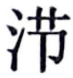

卷二十八 封禅书第六
杨慎：“篇首起语二节，一反一正，此通篇纲领，其应在后。曰‘自古受命帝王，曷尝不封禅’，后引管仲云‘皆受命然后得封禅’，应此句。曰：‘盖有无其应而用事者矣’，后论秦始皇云：‘岂所谓无其德而用事者耶’应此句。”
一般来说，封禅的意思是指封泰山、禅梁父（或其他泰山下的小山）的祭祀天地活动。但《封禅书》的实际内容几乎包括了所有的神祀，司马迁在《太史公自序》中解释说：“受命而王，封禅之符罕用，用则万灵罔不禋祀，追本诸神名山大川礼，作《封禅书》第六。”禋祀，就是祭祀。封禅时，万灵同时受祀，因论封禅而追论诸神及名山大川的祭祀，这是司马迁写《封禅书》的基本设想。《封禅书》是我们了解汉以前礼制的重要资料。
自古受命帝王，曷尝不封禅？盖有无其应而用事者矣，未有睹符瑞见而不臻乎泰山者也。虽受命而功不至，至梁父矣而德不洽，洽矣而日有不暇给，是以即事用希。《传》曰：“三年不为礼，礼必废；三年不为乐，乐必坏。”每世之隆，则封禅答焉，及衰而息。厥旷远者千有余载，近者数百载，故其仪阙然堙灭，其详不可得而记闻云。
《尚书》曰：舜在璇玑玉衡，以齐【齐：指日、月、五星各自循轨道，按规律运行。】 七政【七政：指春、夏、秋、冬、天文、地理、人道。】 。遂类【类：祭祀礼中的一种。郑玄认为类礼就是郊祀。】 于上帝，禋yīn【禋：斋戒沐浴而后祭祀，称为禋祀。】 于六宗【六宗：指四时、寒暑、日、月、星、水旱。一说指天地四时。】 ，望【望：祭礼名。指祭祀山川。】 山川，遍群神。辑五瑞【五瑞：指公、侯、伯、子、男所持的瑞玉，如圭、璧之类。】 ，择吉月日，见四岳诸牧，还瑞。岁二月，东巡狩，至于岱宗。岱宗，泰山也。柴【柴：即焚烧柴火，是一种祭祀形式。】 ，望秩于山川。遂觐东后。东后者，诸侯也。合时月正日，同律度量衡，修五礼【五礼：指吉礼、凶礼、军礼、宾礼、嘉礼。】 ，五玉三帛二生一死贽。五月，巡狩至南岳。南岳，衡山也。八月，巡狩至西岳。西岳，华山也。十一月，巡狩至北岳。北岳，恒山也。皆如岱宗之礼。中岳，嵩高也。五载一巡狩。
禹遵之。后十四世，至帝孔甲，淫德好神，神渎，二龙去之。其后三世，汤伐桀，欲迁夏社，不可，作《夏社》。后八世，至帝太戊，有桑谷【谷：即楮树，又名构树。】 生于廷，一暮大拱，惧。伊陟曰：“妖不胜德。”太戊修德，桑谷死。伊陟赞巫咸，巫咸之兴自此始。后十四世，帝武丁得傅说为相，殷复兴焉，称高宗。有雉登鼎耳雊【雊：雉鸡鸣叫。】 ，武丁惧。祖己曰：“修德。”武丁从之，位以永宁。后五世，帝武乙慢神而震死。后三世，帝纣淫乱，武王伐之。由此观之，始未尝不肃祗，后稍怠慢也。
从古以来能承受天命的帝王，有谁不曾举行过封禅典礼？大概只有由于没有看到相应的祥瑞就去进行封禅的帝王，而没有已经看到了吉兆而不到泰山去进行封禅的帝王。有的帝王虽然接受了天命，但功业没有达到应有的程度，有的帝王身已至梁父，但自身的道德还不能与封禅盛典相融洽，有的帝王布施恩泽虽然融洽了，但是没有空暇去封禅，所以前往泰山封禅的帝王很少。《传》中说：“三年不行礼，礼制必定会荒废；三年不演奏乐曲，乐曲必定会毁坏。”每到太平盛世，就要举办封禅典礼来答谢神祇，到了国运衰败的时候，封禅典礼就停止了。有的停息时间长的已经达到了一千多年，短的也有几百年了，所以封禅典礼的礼仪因此残缺以至堙灭，有关它的详细情况不能被记载并让人们知道了。
《尚书》说：舜帝用璇玑、玉衡这样的天文仪器观测天象，来调整日、月、五星反映出的四季及天文、地理、人道等的情况。然后就对天帝进行类祭，对六宗进行禋祭，对山川之神进行望祭，普遍地祭祀各种神灵。舜验视五等诸侯所执作为符信用的瑞玉，选择吉祥的月、日，会见分管四方和各州的诸侯，将瑞玉还给他们。这一年的二月，舜到东方去巡行视察，到了岱宗。岱宗，即泰山。举行柴祭，按照山川的大小尊卑依次举行望祭。接着接受东后们的朝见。东后，就是东方的诸侯。调和四时气节与月份的大小，校正日的甲乙，统一音律、尺度和重量衡度，完善吉、凶、宾、军、嘉五种礼仪，规定在进见时，各个等级的诸侯应执相应的瑞玉，三公应执荐玉的缯帛，卿和大夫应执两种活的牲畜，士应执一只死雉。五月，巡行视察南岳。南岳，即衡山。八月，巡行视察西岳。西岳，即华山。十一月，巡行视察北岳。北岳，即恒山。祭祀它们的礼仪都与祭祀泰山的礼仪相同。中岳，即嵩山。舜每五年去巡行视察一次。

望祀山川图，选自《钦定书经图说》。
禹遵循舜帝的这种巡行视察的制度。传了十四世之后，到了孔甲帝，他不修德行，喜好祭祀鬼神，怠慢了神灵，上天赐给他骑乘的两条龙便飞走了。孔甲以后的第三世，商汤讨伐夏桀，想把夏朝祭祀土神的社坛移走，后来认为不可以这么做，于是写下了名为《夏社》的文章。后来过了八世，到了太戊帝时期，有桑树和楮树一同在朝廷堂前长出来，一个晚上就长成需要两臂合抱的大树，太戊帝很害怕。贤臣伊陟说：“妖孽不会胜过德行。”太戊便修养自己的德行，桑树和楮树的合生树就枯死了。伊陟把这件事告诉给巫咸，巫咸就祈祷神灵消除了灾祸，从此，这种事情就兴盛起来了。太戊以后的第十四世，武丁帝得到傅说任相国，殷朝因此重新兴盛起来，称作高宗。有只野鸡飞来停在鼎耳上鸣叫，武丁很害怕。祖己劝谏说：“修养德行。”武丁按照祖己的话去做了，他的王位因此长久安稳。以后的第五世，武乙帝由于怠慢了神灵，被雷震死了。武乙以后的第三世，商纣帝淫乱暴虐，周武王讨伐他。由此看来，开始时未尝不肃敬神祗，以后慢慢地就怠惰轻侮起来了。
《周官》曰：冬日至，祀天于南郊，迎长日之至；夏日至，祭地祇。皆用乐舞，而神乃可得而礼也。天子祭天下名山大川，五岳视三公，四渎视诸侯，诸侯祭其疆内名山大川。四渎者，江、河、淮、济也。天子曰明堂【明堂：天子宣政之所。】 、辟雍【辟雍：天子所办学堂，兼作祭所。周围环水如璧，称为辟雍。】 ，诸侯曰泮宫【泮宫：诸侯之学，只有南面的一半环水，北边一半无水，因称泮宫。】 。
周公既相成王，郊祀后稷以配天，宗祀文王于明堂以配上帝。自禹兴而修社祀，后稷稼穑，故有稷祠，郊社所从来尚矣。
自周克殷后十四世，世益衰，礼乐废，诸侯恣行，而幽王为犬戎所败，周东徙雒邑。秦襄公攻戎救周，始列为诸侯。秦襄公既侯，居西垂【垂：同“陲”，边远地区。】 ，自以为主少暤之神，作西畤，祠白帝，其牲用駵驹黄牛羝羊各一云。其后十六年，秦文公东猎汧渭之间，卜居之而吉。文公梦黄蛇自天下属地，其口止于鄜衍。文公问史敦，敦曰：“此上帝之征，君其祠之。”于是作鄜畤，用三牲郊祭白帝焉。
自未作鄜畤也，而雍旁故有吴阳武畤，雍东有好畤，皆废无祠。或曰：“自古以雍州积高，神明之隩【隩：同“墺”，可居住的地方。】 ，故立畤郊上帝，诸神祠皆聚云。盖黄帝时尝用事，虽晚周亦郊焉。”其语不经见，缙绅者不道。
作鄜畤后九年，文公获若石云，于陈仓北坂城祠之。其神或岁不至，或岁数来，来也常以夜，光辉若流星，从东南来集于祠城，则若雄鸡，其声殷云，野鸡夜雊。以一牢祠，命曰陈宝。
作鄜畤后七十八年，秦德公既立，卜居雍，“后子孙饮马于河”，遂都雍。雍之诸祠自此兴。用三百【百：当为“白”。当时秦崇尚白色。】 牢于鄜畤。作伏祠。磔狗邑四门【磔狗邑四门：磔裂狗的肢体，悬挂在城邑四门，以此来禳除灾害。】 ，以御蛊灾。
《周礼》中说：在冬至那一天，在南郊祭祀天神，迎接白昼变长的日子来临；在夏至那一天祭祀地神，并且要采用依照乐曲节拍而起舞的祭祀形式，这样才能让神灵感受到仪式中的敬意。天子祭祀天下的名山大川，以对待太师、太傅、太保这三公的礼节祭祀五岳之神，以对待诸侯的礼节祭祀四渎之神，而各地诸侯只能祭祀他们各自封地内的名山大川。四渎，分别是长江、黄河、淮河、济水。天子在明堂、辟雍举行祭祀，而诸侯在泮宫举行祭祀。
周公辅佐周成王以后，在郊祀时以后稷配天，宗庙祭祀时在明堂中祭文王以配上帝。自从禹兴起后，就开始设立社神，祭祀后土，后稷因为指导人民种植庄稼，所以有后稷的神庙，郊祭和社祭的由来已经很久远了。
自从在周朝消灭殷朝后，历经了十四世，世道开始越来越衰败，礼乐制度都废弃了，诸侯们任意横行，而周幽王又被犬戎部族打败，致使周朝王室把京城往东迁到雒邑。秦襄公攻击犬戎，救援周王室，从此进入受封的诸侯行列。秦襄公成为诸侯以后，封地在西部的边陲地区，自认为应该主祭少暤这一西方的天神，因此修建西畤，用于祭祀白帝，祭祀用的牲畜是黑鬣的红马驹一匹与黄牛、公羊各一头。过了十六年，秦文公在东边的汧水和渭水一带进行狩猎活动，占卜在这里定居的吉凶，结果得到吉兆。秦文公梦见有一条黄蛇从天上垂下来，蛇身附在地面，蛇口停在鄜地低平的山坡上。秦文公向一名叫敦的太史询问，敦说：“这是上帝发出的征兆，您应该祭祀它。”于是修建了鄜畤，用牛、羊、猪三种牲口作祭品在郊外祭祀白帝。
在没有修建鄜畤的时候，在雍邑近旁原来有吴阳用于祭祀地神的武畤，雍邑的东面还有祭天的好畤，全都荒废了，不再进行祭祀。有人说：“自古以来，由于雍州的地势高，在四方之中神明居住的地方，所以创建了畤，用于郊祭上帝，各种神灵的祠庙也都聚集在这里。大约在黄帝的时代就曾经举行过祭祀，即使到了周代的末期也有举行过郊祭。”这些话不见于经典，士大夫们不加称道。
修建鄜畤九年以后，秦文公获得一块质地如玉的石头，在陈仓山北山坡上修筑城池、创建祠庙来祭祀它。它的神灵有时一年也不来一次，有时一年来好几次，经常是夜晚来临，光辉照耀，像流星一样，从东南方向而来聚集在这个祭祀城中，形状像一只雄鸡，发出殷殷般的雷鸣声，野鸡也在夜里啼叫。用一套牛、羊、猪来祭祀它，命名为陈宝。
修建鄜畤以后的第七十八年，秦德公已经即位，占卜以后，认为在雍邑居住吉利，“后来他的子孙把疆域扩展到黄河沿岸”，于是就把国都建在雍邑。雍邑的各种神灵祭典从此开始兴起。因为崇尚白色，所以用三套白色的牛、羊、猪作为祭祀的牲畜，在鄜畤祭天。修建了伏日进行祭祀的祠庙。在城邑的四门，分解狗的肢体来祭神，借此防御蛊灾。
德公立二年卒。其后四年，秦宣公作密畤于渭南，祭青帝【青帝：五方帝中的东方主木德之神。】 。
其后十四年，秦缪公立，病卧五日不寤；寤，乃言梦见上帝，上帝命缪公平晋乱。史书而记藏之府。而后世皆曰秦缪公上天。
秦缪公即位九年，齐桓公既霸，会诸侯于葵丘，而欲封禅。管仲曰：“古者封泰山禅梁父者七十二家，而夷吾所记者十有二焉。昔无怀氏封泰山，禅云云；虙羲【虙羲：即伏羲。】 封泰山，禅云云；神农封泰山，禅云云；炎帝封泰山，禅云云；黄帝封泰山，禅亭亭；颛顼封泰山，禅云云；帝俈封泰山，禅云云；尧封泰山，禅云云；舜封泰山，禅云云；禹封泰山，禅会稽；汤封泰山，禅云云；周成王封泰山，禅社首：皆受命然后得封禅。”桓公曰：“寡人北伐山戎，过孤竹；西伐大夏，涉流沙，束马悬车，上卑耳之山；南伐至召陵，登熊耳山以望江汉。兵车之会三，而乘车之会六，九合诸侯，一匡天下，诸侯莫违我。昔三代受命，亦何以异乎？”于是管仲睹桓公不可穷以辞，因设之以事，曰：“古之封禅，鄗上之黍，北里之禾，所以为盛【盛：用来祭祀的黍稷。】 ；江淮之间，一茅三嵴，所以为藉【藉：荐神用的草席。】 也。东海致比目之鱼，西海致比翼之鸟，然后物有不召而自至者十有五焉。今凤皇麒麟不来，嘉谷不生，而蓬蒿藜莠茂，鸱枭【鸱枭：猫头鹰。古人认为是不祥之鸟。】 数至，而欲封禅，毋乃不可乎？”于是桓公乃止。是岁，秦缪公内晋君夷吾。其后三置晋国之君，平其乱。缪公立三十九年而卒。
秦德公做了两年国君就去世了。这以后的第四年，秦宣公在渭水以南修建密畤，祭祀青帝这位东方天神。
这以后的第十四年，秦穆公做了国君即位，因为生病，躺在床上五天没有醒来；醒来后，说在梦中见到了上帝，上帝命令他平定晋国的内乱。史官把这件事记录下来，收藏在藏图书的府库内。结果后世的人都说秦穆公上天了。
秦穆公在位的第九年，齐桓公做了诸侯的霸主，在葵丘会见各国诸侯，他想在这时举行封禅活动。管仲说：“古时候到泰山举行封礼和到梁父举行禅礼的君王共有七十二家，而我所记下来的只有十二家。过去无怀氏到泰山行封礼，到云云山行禅礼；伏羲到泰山行封礼，到云云山行禅礼；神农到泰山行封礼，到云云山行禅礼；炎帝到泰山行封礼，到云云山行禅礼；黄帝到泰山行封礼，到亭亭山行禅礼；颛顼到泰山行封礼，到云云山行禅礼；喾帝到泰山行封礼，到云云山行禅礼；尧到泰山行封礼，到云云山行禅礼；舜到泰山行封礼，到云云山行禅礼；禹到泰山行封礼，到会稽山行禅礼；汤到泰山行封礼，到云云山行禅礼；周成王到泰山行封礼，到社首山行禅礼。他们都是承受天命登上帝王之位然后祭祀天地，举行封禅活动的。”齐桓公说：“我到北方讨伐山戎部族，经过孤竹国；向西讨伐大夏，穿过流沙，勒紧马匹，悬挂着车辆，登上了卑耳山；向南征伐到了召陵，登上了熊耳山，远远眺望长江、汉水。召集诸侯军队会同作战有三次，乘车来与诸侯会盟有六次，共九次会合诸侯，匡正了天下，诸侯之中没有人违背我的意志。过去夏、商、周三代帝王承受天命，和我现在的情况又有什么不同呢？”于是管仲看出不能用言辞说服齐桓公，因而想用其他事物来说服他，说：“古代进行封禅，要用鄗上山出产的黍子，北里出产的粟，来作祭祀的食物；用一种生长在长江、淮河一带，茅杆上有三条棱嵴的灵茅，作为铺在地上的草垫子。要送来在东方极远海域才能捕得的比目鱼，以及在西方极远海域才能捕获的比翼鸟，然后还要有不召集而自发来到的奇物十五种。现在凤凰、麒麟没有到来，嘉祥的谷物没有长出，而蓬、蒿、藜、莠等秽草却生长得茂盛，猫头鹰等恶鸟多次飞来，这时还想去封禅，恐怕不合适吧？”于是齐桓公就取消了封禅的计议。这一年，秦穆公把晋国国君夷吾送回晋国即位。这以后他接连三次替晋国立了国君（惠公、怀公、文公），平定了晋国的内乱。秦穆公在位三十九年后去世。
凌约言：“太史公作《封禅书》，其于祷词百出，则随之以若有符应之言，于求仙无方，则随之以‘终不可得’之言，迁之微文见义，往往如此，而武帝之无道昭昭矣。”
其后百有余年，而孔子论述六艺，传略言易姓而王，封泰山禅乎梁父者七十余王矣，其俎豆之礼不章【章：同“彰”。明显、显著。】 ，盖难言之。或问禘之说，孔子曰：“不知。知禘之说，其于天下也视其掌。”《诗》云纣在位，文王受命，政不及泰山。武王克殷二年，天下未宁而崩。爰【爱：于是，因此。】 周德之洽维成王，成王之封禅则近之矣。及后陪臣【陪臣：诸侯国中的大夫在天子之国的自称。】 执政，季氏旅【旅：一种祭祀仪式。祭山为旅。】 于泰山，仲尼讥之。
是时苌弘以方事周灵王，诸侯莫朝周，周力少，苌弘乃明鬼神事，设射《狸首》【射《狸首》：古礼的一种，射时唱《狸首》，歌辞中有射诸侯不来朝者的话。】 。狸首者，诸侯之不来者。依物怪欲以致诸侯。诸侯不从，而晋人执杀苌弘。周人之言方怪者自苌弘。
其后百余年，秦灵公作吴阳上畤，祭黄帝；作下畤，祭炎帝。
后四十八年，周太史儋见秦献公曰：“秦始与周合，合而离，五百岁当复合，合十七年而霸王出焉。”栎阳雨金，秦献公自以为得金瑞，故作畦畤栎阳而祀白帝。
其后百二十岁而秦灭周，周之九鼎入于秦。或曰宋太丘社亡，而鼎没于泗水彭城下。
其后百一十五年而秦并天下。
这以后过了一百多年，就有孔子论述六艺，传文中大致记载了历代改朝换姓的帝王去泰山行封礼、去梁父山行禅礼的有七十多位，他们封禅时用的祭品、祭器制度都记载得不明确，大概很难说明白原因。有人问询禘祭的礼仪，孔子说：“不知道。知道了禘祭的礼仪，那么处理天下大事就像看自己的手掌一样清楚、易行了。”《诗经》中说，商纣王还在位时，周文王就是承受了天命，但政事中没有封泰山的事。周武王攻克殷商两年后，天下还没有安定就去世了。于是周朝德政的普及要从周成王说起，周成王去进行封禅活动就近乎合情合理了。等到以后诸侯国的陪臣执掌政事，鲁国的季孙氏也到泰山举行旅祭，孔子就讥刺他。
这个时候苌弘用方术替周灵王效力，诸侯们没有谁去朝见周天子，周天子的力量弱小，苌弘就宣扬有关于鬼神的事例，设立了射箭唱《狸首》的仪式。狸首，就代表那些不来朝见的诸侯。想凭借神怪的力量招致诸侯来朝。诸侯们没有听从，而晋国人抓住了苌弘，并把他杀死了。周朝人谈论方术怪异的风气是从苌弘开始的。
这以后过了一百多年，秦灵公在吴阳修建了上畤，祭祀黄帝；修建了下畤，祭祀炎帝。
此后四十八年，周朝太史儋去拜见秦献公的时候说：“秦国当初和周朝是合在一起的，结合以后又分离，经过五百年应当再次合在一起，结合十七年后会有出现霸王。”栎阳下雨，有黄金随雨落下，秦献公自己认为得到了五行中金的祥瑞，因此在栎阳修建了畦畤来祭祀白帝。
这以后过了一百二十年，秦国消灭了周朝，周朝的九鼎进入秦国。有人说宋的右陵太丘社中的社坛被摧毁后，有一只鼎沉没在彭城城下的泗水河中。
这以后过了一百一十五年，秦国统一了天下。
秦始皇既并天下而帝，或曰：“黄帝得土德，黄龙地蚓【蚓：同“蚓”，蚯蚓。】 见。夏得木德，青龙止于郊，草木畅茂。殷得金德，银自山溢。周得火德，有赤乌之符。今秦变周，水德之时。昔秦文公出猎，获黑龙，此其水德之瑞。”于是秦更命河曰“德水”，以冬十月为年首，色上黑，度以六为名，音上大吕，事统上法。
即帝位三年，东巡郡县，祠驺峄山，颂秦功业。于是征从齐鲁之儒生博士七十人，至乎泰山下。诸儒生或议曰：“古者封禅为蒲车，恶伤山之土石草木；埽地而祭，席用菹【菹：枯草。】 秸【秸：农作物收割以后的茎。】 ，言其易遵也。”始皇闻此议各乖异，难施用，由此绌儒生。而遂除车道，上自泰山阳至巅，立石颂秦始皇帝德，明其得封也。从阴道下，禅于梁父。其礼颇采太祝之祀雍上帝所用，而封藏皆秘之，世不得而记也。
秦始皇统一天下称帝以后，有人说：“黄帝得到五行中的土德，有黄色的龙和巨大的蚯蚓出现。夏代得到了五行中的木德，有青色的龙栖息在郊野，草木生长得繁茂、茁壮。殷代得到了五行中的金德，有白银从山中流出。周代得到了五行中的火德，有形状像赤乌一样的天火下降这种符瑞。现在秦朝取代了周朝，是属于水德的时代。从前秦文公外出打猎，曾捕获一条黑龙，这就是水德的祥瑞。”于是秦朝把黄河更名为“德水”，规定冬季十月作为每年的开端，崇尚黑色，度量以六作为一个单位，音律崇尚大吕律，国家的政务法令崇尚法治。
秦始皇登上帝位的第三年，往东巡视郡县，在驺县峄山立祠祭祀，称颂秦国的功业。于是从原先的齐国、鲁国地区，征召了信奉孔子学说的儒生和通晓古今的博士共七十人随行，到达了泰山脚下。这些儒生中有人议论说：“古代举行封禅时，要使用以蒲草裹着车轮的车子，这样做的原因是害怕硬车轮会伤害山上的土石草木；祭祀时把地面扫干净，把用枯草和农作物茎秆编成的席子铺在地上，说明祭祀是很容易照着办的。”秦始皇听到这些议论各不相同，十分古怪，很难施行采用，因此贬黜了儒生，决定马上修筑车道，从泰山的南面一直往上修到山顶，竖立石碑刻字，颂扬秦始皇的功德，表明他有资格封禅泰山。从泰山北面的道路下山，在梁父山举行禅礼。举行封禅的礼仪采取了很多太祝在雍邑祭祀上帝时使用的仪式，但有关记录都封藏隐秘了起来，世人不得而知，也不能够加以记载。
始皇之上泰山，中坂【坂：山坡。】 遇暴风雨，休于大树下。诸儒生既绌，不得与用于封事之礼，闻始皇遇风雨，则讥之。
于是始皇遂东游海上，行礼祠名山大川及八神，求仙人羡门之属。八神将自古而有之，或曰太公以来作之。齐所以为齐，以天齐也。其祀绝莫知起时。八神：一曰天主，祠天齐。天齐渊水，居临菑南郊山下者。二曰地主，祠泰山梁父。盖天好阴，祠之必于高山之下，小山之上，命曰“畤”；地贵阳，祭之必于泽中圜丘云。三曰兵主，祠蚩尤。蚩尤在东平陆监乡，齐之西境也。四曰阴主，祠三山。五曰阳主，祠之罘。六曰月主，祠之莱山。皆在齐北，并勃海。七曰日主，祠成山。成山斗入海，最居齐东北隅，以迎日出云。八曰四时主，祠琅邪。琅邪在齐东方，盖岁之所始。皆各用一牢具祠，而巫祝所损益，圭币杂异焉。
自齐威、宣之时，驺子之徒论着终始五德【终始五德：又称五德终始，是按五行学说推断、解释王朝递变的学说。认为王朝受天命而兴，必秉受五德之一，兴灭都取决于五行的生克变化。】 之运，及秦帝而齐人奏之，故始皇采用之。而宋毋忌、正伯侨、充尚、羡门高最后皆燕人，为方仙道，形解销化【形解销化：道家语，即修炼成仙后，如同蝉蜕一样抛弃自己的身体，飞升而去。】 ，依于鬼神之事。驺衍以阴阳主运显于诸侯，而燕齐海上之方士传其术不能通，然则怪迂阿谀苟合之徒自此兴，不可胜数也。
秦始皇上泰山的时候，在半山腰遇到了暴风雨，于是在一棵大树下面避雨。儒生已经被贬黜了，不能参加在泰山顶祭天的礼仪活动，听说秦始皇遇到了风雨，都讥笑他。
于是秦始皇继续向东到海边去游览，一路祭祀名山大川和八神，寻求像羡门一类的仙人。八神是自古以来就有的，也有人说是从姜太公以来才产生的。齐国之所以称作“齐”，就是因为它和天的中央等齐。对它的祭祀已经断绝，谁也不知道是什么时候兴起的。八神的名称：第一位叫天主，在天齐祭祀。天齐有五眼泉水一并流出，位于临菑城南郊的山脚下。第二位叫地主，在泰山、梁父山祭祀。因为天神喜好阴，所以祭祀它一定要在高山的下面，小山的山上，称为“畤”；地神喜好阳，祭祀它一定要在水泽当中的圆形丘陵上。第三位叫兵主，在蚩尤山祭祀。蚩尤山位于东平郡的陆监乡，在齐国的西部疆域。第四位叫阴主，在参山祭祀。第五位叫阳主，在之罘山祭祀。第六位叫月主，在莱山祭祀。参山、之罘山、莱山都在齐国的北部，靠近渤海。第七位叫日主，在成山祭祀。成山曲折陡峭地伸入海中，在齐国东北方的最顶端，是用来迎接日出的地方。第八位叫四时主，在琅邪山祭祀。琅邪山位于齐国的东方，所以这里是在时间上每年最先开始的地方。八神都分别用一套盛在器皿中的牛、羊、猪来祭祀，但是各个祠庙中主持祭礼的巫师们对祭品有所增减，祭祀用的玉和帛等也不尽相同。
自从齐威王、齐宣王的时候起，驺衍这一类人就著书论述金、木、水、火、土五德终始运行的规律，到了秦国称帝时，就有齐国人把这些理论上奏，所以秦始皇就采用了它。而宋毋忌、正伯侨、充尚、羡门高等人，都是燕国人，羡慕并且仿效古人的神仙之道，主张人老死之后精神可以脱离肉体，变化成神仙，所说的是依仗于鬼神的一些事。驺衍用阴阳交替循环可以主宰王朝命运的学说在诸侯各国得到显达，而燕国、齐国沿海一带的方术之士继承了驺衍的学说，却不能融会贯通，于是兴起了一批靠奇谈怪论、阿谀逢迎去苟合君主的人，这一类人多得数不过来。
自威、宣、燕昭使人入海求蓬莱、方丈、瀛洲。此三神山者，其傅【傅：指世人相传。】 在勃海中，去人不远；患且至，则船风引而去。盖尝有至者，诸仙人及不死之药皆在焉。其物禽兽尽白，而黄金银为宫阙。未至，望之如云；及到，三神山反居水下。临之，风辄引去，终莫能至云。世主莫不甘心焉。及至秦始皇并天下，至海上，则方士言之不可胜数。始皇自以为至海上而恐不及矣，使人乃赍童男女入海求之。船交海中，皆以风为解，曰未能至，望见之焉。其明年，始皇复游海上，至琅邪，过恒山，从上党归。后三年，游碣石，考入海方士，从上郡归。后五年，始皇南至湘山，遂登会稽，并【并：沿着。】 海上，冀遇海中三神山之奇药。不得，还至沙丘崩。
二世元年，东巡碣石，并海南，历泰山，至会稽，皆礼祠之，而刻勒始皇所立石书旁，以章始皇之功德。其秋，诸侯畔秦。三年而二世弑死。
始皇封禅之后十二岁，秦亡。诸儒生疾秦焚《诗》《书》，诛僇【僇：侮辱。】 文学，百姓怨其法，天下畔之，皆讹曰：“始皇上泰山，为暴风雨所击，不得封禅。”此岂所谓无其德而用事者邪？
自从齐国威王、宣王、燕昭王开始，就不断派人到大海里去寻找神仙居住的蓬莱、方丈、瀛洲三座山。这三座神山，传说是在渤海当中，离有人的地方不太远，难办的是如果船快要接近它了，就会有大风把船吹走。大约曾经有人到过那里，据说那里有各种仙人和使人长生不死的药物。那里的禽兽等生物都是白色，而它们居住的宫室门阙都是用黄金白银建造的。还没有到达神山时，远远地望去像是一片云彩；等到了跟前，这三座神山反而沉入了水面底下。快要临近这三座神山，就会被风吹走，始终不能够到达神山。世间的君王没有谁不对神山心驰神往。等到秦始皇统一了天下，巡视到了海边，讲述这件事情的方土多得不能尽数。秦始皇认为自己到了海上又恐怕不能到达三座神山，于是派人只携带一些童男童女到海上去寻找神山。回来的人都以船进入大海当中后就被风吹走为借口，说未能到达，只是远远地望见神山。第二年，秦始皇再次巡游海边，到了琅邪山，经过恒山以后，从上党郡返回。以后的第三年，秦始皇巡游碣石山，询问了进入海区的方士后，从上郡返回。以后的第五年，秦始皇南巡到了湘山，接着登上了会稽山，沿着海边巡游，希望能够遇见海中的三座神山，得到神山上的长生不死之药。没能够到达，回来时，在沙丘这个地方逝世了。
秦二世元年（前209年），秦二世往东去巡视碣石山，沿着海岸南下，经过泰山，到了会稽山，在这些地方都设了礼仪祭祀，又在秦始皇所立的石碑铭文旁边刻写文辞，用来表彰秦始皇的功德。这年秋天，各地诸侯反叛秦朝。三年后秦二世被杀。
秦始皇举行封禅活动后十二年，秦朝灭亡。儒生们痛恨秦朝焚毁《诗》《书》，屠杀并侮辱文人，百姓们怨恨秦朝的酷法，天下就背叛秦朝，都谣传说：“秦始皇上泰山的时候，受到暴风雨的袭击，未能举行封禅典礼。”这难道不就是所谓没有具备相应的德行而去举行封禅仪式的那种情况吗？
昔三代之居皆在河洛之间，故嵩高为中岳，而四岳各如其方，四渎咸在山东。至秦称帝，都咸阳，则五岳、四渎皆并在东方。自五帝以至秦，轶兴轶衰，名山大川或在诸侯，或在天子，其礼损益世殊，不可胜记。及秦并天下，令祠官所常奉天地名山大川鬼神可得而序也。
于是自淆以东，名山五，大川祠二。曰太室。太室，嵩高也；恒山，泰山，会稽，湘山。水曰济，曰淮。春以脯酒为岁祠，因泮冻【泮冻：解冻。】 ，秋涸冻【涸冻：干涸和冰冻。】 ，冬塞【冬塞：冬季冰雪塞径，导致道路不通。】 祷祠。其牲用牛犊各一，牢具【牢具：与牲牢配用的器具。】 圭币各异。
自华以西，名山七，名川四。曰华山，薄山。薄山者，衰山也。岳山，岐山，吴岳，鸿冢，渎山。渎山，蜀之汶山。水曰河，祠临晋；沔，祠汉中；湫渊，祠朝 ；江水，祠蜀。亦春秋泮涸祷塞，如东方名山川；而牲牛犊牢具圭币各异。而四大冢鸿、岐、吴、岳，皆有尝禾【尝禾：祭名。秋季谷物丰收，祭以报神，称为尝祭或称尝。】 。
陈宝节来祠。其河加有尝醪【尝醪：祭名。以酒醪飨神。】 。此皆在雍州之域，近天子之都，故加车一乘，駵驹四。
霸、产、长水、沣、涝、泾、渭皆非大川，以近咸阳，尽得比山川祠，而无诸加。
汧、洛二渊，鸣泽、蒲山、岳 山之属，为小山川，亦皆岁祷塞泮涸祠，礼不必同。
从前夏、商、周三代的居住地点都在黄河、洛河一带，所以把嵩高山定为中岳，而四岳各在按它所在的方位命名，四条大河都在崤山以东。到了秦国称帝，建都在咸阳，那么五岳、四条大河就都一并在东方。从五帝以来一直到秦朝，一代代地兴衰更迭，名山大川有时候在诸侯国内，有时候归属天子，对它们祭祀的礼仪有增有减，各个时代都不一样，不能一一记录下来。等到秦国统一了天下，命令祭祀官员经常奉祭的天、地、名山大川的各位鬼神，可以按秩序一一记录下来。
于是从淆山向东，有名山五座，大河两条要祭祀。这五座名山是太室山，太室山就是嵩高山；以及恒山、泰山、会稽山、湘山。两条大河是济水、淮水。春季用干肉、酒祭祀，祈祷一年农事丰收，随即河水解冻，秋季又冰冻了，冬季冰雪塞径，为酬报神灵祈求保佑而进行祭祀。各个季节祭祀时所用的牺牲祭品是一头小牛，其他盛在器皿中的牲畜和玉、帛等各处不相同。
从华山往西，有名山七座，名川四条。名山有华山、薄山。薄山，就是衰山。还有岳山、岐山、吴岳、鸿冢、渎山。渎山，就是蜀郡的汶山。河流有黄河，在临晋祭祀它；沔水，在汉中祭祀它；湫渊，在朝祭祀它；长江，在蜀郡治所祭祀它。祭祀的时间也是在春秋季节，解冻和封冻，以及冬季路塞酬报神灵祈求保佑，和东方的名山大川的祭祀方法是一样的；而使用的牺牲，盛在器皿中的牲畜、玉帛等各不相同。四大冢鸿冢、岐冢、吴冢、岳冢，也都有都有尝禾的祭祀。
陈宝祠的神灵应节而来就祭祀。对黄河的祭祀另外增加尝醪的祭祀。这两处都在雍州的地域范围内，靠近天子的都城，所以增加一辆车和四匹赤身黑鬣的马驹作祭品。
霸水、产水、长水、沣水、涝水、泾水、渭水都不是大河，因为它们临近咸阳，全都可以按照祭祀山川之神的规格祭祀，但没有增加各种祭品。
汧水和洛水两条河流，鸣泽、蒲山、岳崤山一类的小山川，也都在每年举行岁祭、酬报神灵、解冻和枯水封冻的祭祀，礼仪规格不一定相同。
而雍有日、月、参、辰、南北斗、荧惑、太白、岁星、填星、辰星、二十八宿、风伯、雨师、四海、九臣、十四臣、诸布【诸布：指祭星之处。】 、诸严、诸逑之属，百有余庙。西亦有数十祠。于湖有周天子祠。于下邽有天神。沣、滈有昭明、天子辟池。于杜、亳有三社主之祠、寿星祠；而雍菅庙亦有杜主。杜主，故周之右将军，其在秦中，最小鬼之神者。各以岁时奉祠。
唯雍四畤上帝为尊，其光景动人民唯陈宝。故雍四畤，春以为岁祷，因泮冻，秋涸冻，冬塞祠，五月尝驹，及四仲之月月祠，若陈宝节来一祠。春夏用骍，秋冬用駵。畤驹四匹，木禺龙栾车一驷，木禺车马一驷，各如其帝色。黄犊羔各四，圭币各有数，皆生瘗yì埋【瘗埋：埋葬。】 ，无俎豆之具。三年一郊。秦以冬十月为岁首，故常以十月上宿郊见，通权火【权火：即燎火。焚柴祭天，称燎。天子不亲至祭所，而在宫殿之侧行礼，自祭所至宫殿以燎火相通，如天子亲至。】 ，拜于咸阳之旁，而衣上白，其用如经祠云。西畤、畦畤，祠如其故，上不亲往。
诸此祠皆太祝常主，以岁时奉祠之。至如他名山川诸鬼及八神之属，上过则祠，去则已。郡县远方神祠者，民各自奉祠，不领于天子之祝官。祝官有秘祝，即有灾祥，辄祝祠移过于下。
而雍州有日、月、参宿、辰宿、南斗北斗、火星、金星、木星、土星、水星、二十八宿、风伯、雨师、四海之神、九臣、十四臣、各个祭星之处、各个严神、各个逑神之类，有一百多座神庙。秦的旧都西县也有几十座祠庙。在京兆湖县有周天子的祠庙。在下邽县有天神庙。在沣水、滈水有火星昭明庙和天子辟池。在杜县的亳亭有三座杜主祠和寿星祠；而且在雍州的草屋祠庙中也祭祀杜主。杜主，是从前周宣王的右将军，他是秦中地区内最灵验的小鬼神。各个祠庙每年都按一定的时节各自祭祀。
神灵中只有雍州用畤、密、吴阳上下四畤祭祀的上帝最尊贵，祭祀时的景象最激动人心的只有陈宝祠。所以过去雍州四畸的祭祀，春季用来祈祷一年丰收的祭祀，随即河水解冻了，秋天枯水又封冻了，冬季路塞为酬报神灵祭祀，五月用马驹作为祭品举行尝祭，以及仲春、仲夏、仲秋、仲冬四个月的月祭，至于陈宝神是在节日时有一次祭祀。春夏季节祭祀用赤色马，秋冬季节祭祀用赤身黑鬣的马。每畤用四匹马驹，四条木雕的龙驾驶的有铃大车一辆，各自车马的颜色和所祭祀的青、黄、赤、白四帝的颜色是相同的。还有黄色的小牛小羊各四头，玉圭、布帛各自有一定的数量，全都用活着埋在地里的方式，没有俎豆等盛宴享祭品的器具。每三年举行一次郊祭。秦朝把冬季十月作为每一年的开始，所以皇帝经常在十月里斋戒，举行郊祭，将烽火从咸阳一直排列到四畤祭坛，在咸阳城的旁边跪拜，所穿的服饰崇尚白色，所用的祭典仪式和日常祭祀时一样。西畤、畦畤，祭祖和过去一样，皇帝不亲自前往。
这些祭祀日常全是由太祝主管，每年按时供奉。至于像其他的名川大山、各种鬼物和八神一类，皇帝经过它们的祠庙的时候就去祭祀，离开后就停止了。远方各郡县的神庙由当地民众各自供奉祭祀，不属于天子的祭祀官员们管理。祭祀的官员中有秘祝官，如果出现了灾异，就替天子举行祈祷祭祀，请求把过失和灾祸转移到臣民身上。
汉兴，高祖之微时，尝杀大蛇。有物曰：“蛇，白帝子也，而杀者赤帝子。”高祖初起，祷丰枌榆社。徇沛，为沛公，则祠蚩尤，衅鼓旗。遂以十月至灞上，与诸侯平咸阳，立为汉王。因以十月为年首，而色上赤。
二年，东击项籍而还入关，问：“故秦时上帝祠何帝也？”对曰：“四帝，有白、青、黄、赤帝之祠。”高祖曰：“吾闻天有五帝，而有四，何也？”莫知其说。于是高祖曰：“吾知之矣，乃待我而具五也。”乃立黑帝祠，命曰北畤。有司进祠，上不亲往。悉召故秦祝官，复置太祝、太宰，如其故仪礼。因令县为公社【公社：公祭的社坛。】 。下诏曰：“吾甚重祠而敬祭。今上帝之祭及山川诸神当祠者，各以其时礼祠之如故。”
后四岁，天下已定，诏御史，令丰谨治枌fén榆社，常以四时春以羊彘祠之。令祝官立蚩尤之祠于长安。长安置祠祝官、女巫。其梁巫，祠天、地、天社、天水、房中、堂上之属；晋巫，祠五帝、东君、云中君、司命、巫社、巫祠、族人、先炊之属；秦巫，祠社主、巫保、族累之属；荆巫，祠堂下、巫先、司命、施糜之属；九天巫，祠九天：皆以岁时祠宫中。其河巫祠河于临晋，而南山巫祠南山秦中。秦中者，二世皇帝。各有时日。
其后二岁，或曰周兴而邑邰，立后稷之祠，至今血食【血食：生食。祭祀用牺牲，不加蒸煮，贵其有血腥气。】 天下。于是高祖制诏御史：“其令郡国县立灵星祠【灵星祠：后稷庙。】 ，常以岁时祠以牛。”
汉朝兴起，汉高祖在贫贱的时候，曾经杀死过一条大蛇。有神怪说：“蛇，是白帝的儿子，而杀它的人是赤帝的儿子。”高祖刚起兵时，在丰邑枌榆乡的土地神庙里祈祷神灵。占领了沛县后，成了沛公，就祭祀了蚩尤，用牲畜的血染在军旗和战鼓上。于是在十月到达了灞上，与共同起事的诸侯平定了咸阳，被立为汉王。因此把十月定为每年的开始，而崇尚红色。
汉高祖二年（前205年），往东攻打项羽，回来后进入关中，就问：“过去秦朝时候祭祀的上帝是哪些天帝？”回答说：“四个天帝，有白帝、青帝、黄帝、赤帝的祭祀。”高祖说：“我听说天上有五帝，而祭祀的只有四个，这是为什么呢？”没有谁知道其中的原因。于是汉高祖就说：“我知道了，就是等待着我来把五帝凑完备呢。”于是设立了祭祀黑帝的祭祀坛，命名为北畤。由主管官员前去祭祀，皇帝不亲自前往。汉高祖把过去秦朝的祭祀官员全部都召集起来，重新设置了太祝、太宰，礼仪的形式和过去一样。接着命令各县创建官府祭祀天地鬼神的公社。传下诏书说：“我非常尊重神庙，敬重祭祀。现在对上帝的祭祀和应当进行的对山川各种神灵们的祭祀，要各依据它需要的时间跟过去一样按时行礼祭祀。”
这以后过了四年，天下已经平定，高祖下令给御史，命令丰邑认真整修、养护枌榆社，按四季时节祭祀，春季用羊、猪祭祀它。命令祭祀官员在长安设立了祭祀蚩尤的庙。在长安设置了负责祭祀的祝官和女巫。其中原来魏地的巫祝负责祭祀天、地、天社、天水、房中、堂上一类的神灵；原来晋地的巫祝负责祭祀五帝、东君、云中君、司命、巫社、巫祠、族人、先炊一类的神灵；原来秦地的巫祝负责祭祀社主、巫保、族累一类的神灵；原来荆地的巫祝负责祭祀堂下、巫先、司命、施糜一类的神灵；九天巫负责祭祀九天之神。这些全都是每年按时节在宫中祭祀。河巫负责在临晋祭祀黄河，南山巫负责祭祀南山与秦中。秦中，就是秦二世皇帝。各自都有规定的祭祀时日。
这以后两年，有人说周家兴起时就在邰地建造了城邑，设立了后稷的祠庙，至今还享受着天下人的牲祭。于是汉高祖给御史下诏书说：“你们要下令各郡、国、县都创建后稷庙，平时每年按时用牛去祭祀后稷神。”
高祖十年春，有司请令县常以春二月及腊祠社稷以羊豕，民里社各自财以祠。制曰：“可。”
其后十八年，孝文帝即位。即位十三年，下诏曰：“今秘祝移过于下，朕甚不取。自今除之。”
始名山大川在诸侯，诸侯祝各自奉祠，天子官不领。及齐、淮南国废，令太祝尽以岁时致礼如故。
是岁，制曰：“朕即位十三年于今，赖宗庙之灵，社稷之福，方内艾安【艾安：治理得好，安定无事。艾，同“义”。】 ，民人靡疾。间者比年登，朕之不德，何以飨此？皆上帝诸神之赐也。盖闻古者飨其德必报其功，欲有增诸神祠。有司议增雍五畤路车各一乘，驾被【驾被：驾车及被服所用器具。指车的配备用具。】 具；西畤畦畤禺车各一乘，禺马四匹，驾被具；其河、湫、汉水加玉各二；及诸祠，各增广坛场，圭币俎豆以差加之。而祝厘【祝厘：即祝福。】 者归福于朕，百姓不与焉。自今祝致敬，毋有所祈。”
鲁人公孙臣上书曰：“始秦得水德，今汉受之，推终始传，则汉当土德，土德之应黄龙见。宜改正朔，易服色，色上黄。”是时丞相张苍好律历，以为汉乃水德之始，故河决金堤，其符也。年始冬十月，色外黑内赤，与德相应。如公孙臣言，非也。罢之。后三岁，黄龙见成纪。文帝乃召公孙臣，拜为博士，与诸生草改历服色事。其夏，下诏曰：“异物之神见于成纪，无害于民，岁以有年。朕祈郊上帝诸神，礼官议，无讳以劳朕。”有司皆曰“古者天子夏亲郊，祀上帝于郊，故曰郊”。于是夏四月，文帝始郊见雍五畤祠，衣皆上赤。
汉高祖十年（前197年）春天，有关官府请求下令各县用羊和猪在每年春季二月和腊月祭祀土地神和谷神，百姓按里社各自集资加以祭祀。高祖批示说：“可以。”
这以后的第十八年，孝文帝即位。在位十三年时，下达诏书说：“现在秘祝官把过失和灾祸转移给臣民，我非常不赞成这种做法。从今天起废除它。”
起初名山大川位于诸侯各国境内，诸侯国内的祭祀官员们各自祭祀，不属于天子的太祝官管理。等到齐国和淮南国被废除后，汉文帝命令太祝官像过去一样全部按时举行祭礼。
这一年，颁布命令说：“我就帝位至今已有十三年，依赖祖先宗庙的神灵，国家社稷的福荫，国境内安定无事，人民没有疾苦。近来，年年获得丰收，我没有好的德行，凭什么享受这样的福份呢？这全是上帝和神灵们所赐予的。听说古代的人享受了神灵的恩德，就一定要报答它们的功劳，我想要增加祭祀各种神灵的祭品。有关的负责官员建议给雍邑五畤各增加一辆四匹马拉的大车和全套的车马用具；给西畤、畦畤各增加一辆用木头雕的车和四匹用木头雕的马，以及全套的车马用具；给黄河、湫泉、汉水各增加二枚玉璧；对于各种祠庙，则分别拓宽它们的坛场，玉帛和祭品盛器俎豆等也按照相应等级予以增加。祈求福佑的人把福惠都归结于我，百姓们不在其中。从现在起祝官只表达对神灵的敬意，不要再为我有所祈祷。”
从前属于鲁国的人公孙臣上书说：“当初秦朝获得水德，现在汉朝接受了秦的天下，推算五德终始相传的原理，那么汉朝应当承受土德，土德的应验是黄龙出现。应该改变一年第一天开始时间即正朔制度的规定，更换服装和饰物的颜色，崇尚黄色。”这个时候丞相张苍喜好律数历法的学问，认为汉朝是水德的开始，所以黄河在金堤决口，这就是水德的符兆。每年在冬季十月开始，当时自然界的颜色是外黑内赤，与水德相应。公孙臣的说法是不对的。于是否定了这种土德主张。后来的第三年，黄龙在成纪出现。汉文帝就召见公孙臣，任命他作博士，让他和其他的儒生一起草拟更换历法和服饰颜色的计划。这年夏天，下达诏书说：“成纪出现了异类的神物，对民众没有危害，今年因此有好的收成。我要在郊外祭祀上帝和各种神灵，礼官们议论一下方案，不要因为会使我劳累就隐瞒避讳。”官员们都说：“古代的天子在夏季亲自参加郊祭，在郊外祭祀上帝，所以叫作郊祭。”于是在这一年的夏季四月，汉文帝开始在雍州的五畤举行郊祭，衣着都崇尚红色。
其明年，赵人新垣平以望气【望气：占卜术。认为物分阴阳。阴阳必上聚为云气，所以望云气可知万物。】 见上，言：“长安东北有神气，成五采，若人冠絻【冠絻：即冠冕，帽子。】 焉。或曰东北神明之舍，西方神明之墓也。天瑞下，宜立祠上帝，以合符应。”于是作渭阳五帝庙，同宇，帝一殿，面各五门，各如其帝色。祠所用及仪亦如雍五畤。
夏四月，文帝亲拜霸渭之会，以郊见渭阳五帝。五帝庙南临渭，北穿蒲池沟水，权火举而祠，若光辉然属天焉。于是贵平上大夫，赐累千金。而使博士诸生刺《六经》中作《王制》，谋议巡狩封禅事。
文帝出长门，若见五人于道北，遂因其直北立五帝坛，祠以五牢具。
其明年，新垣平使人持玉杯，上书阙下献之。平言上曰：“阙下有宝玉气来者。”已视之，果有献玉杯者，刻曰“人主延寿”。平又言“臣候日再中”。居顷之，日却复中。于是始更以十七年为元年，令天下大酺【大酺；聚饮。古禁聚饮，只有在喜庆的日子，天子下诏书，解除禁令，百姓才得聚饮。】 。
平言曰：“周鼎亡在泗水中，今河溢通泗，臣望东北汾阴直有金宝气，意周鼎其出乎？兆见不迎则不至。”于是上使使治庙汾阴南，临河，欲祠出周鼎。
人有上书告新垣平所言气神事皆诈也。下平吏治，诛夷新垣平。自是之后，文帝怠于改正朔服色神明之事，而渭阳、长门五帝使祠官领，以时致礼，不往焉。
明年，匈奴数入边，兴兵守御。后岁少【少：同“稍”。】 不登。
数年而孝景即位。十六年，祠官各以岁时祠如故，无有所兴，至今天子。
第二年，原来赵地的人新垣平以擅长观望云气被汉文帝召见，说：“长安城的东北方有神异的云气，显示出五种色彩，像人们戴的冠冕一样。有人说东北方是神明居住的地方，西方是神明的坟冢。上天的祥瑞降下，应当创建祠庙祭祀上帝，以此来应合祥瑞的符兆。”于是就建造了渭阳的五帝庙，五帝在同一座屋宇下，每帝各设一座殿堂，正面分别设有五座大门，每座门的颜色都和殿堂中这方天帝的颜色相同。祭祀时所用祭品和采取的仪礼也和雍邑五畤完全一样。
夏季四月，汉文帝亲自到灞水、渭水相会的地方拜神，以郊祭来参见渭阳庙的五帝。五帝庙的南面是渭水，在北面穿凿沟渠，从而引渭水灌入蒲池，点燃烽火进行祭祀，就好像有火光闪闪一直连到天上。于是使新垣平显贵，被封为上大夫，赏赐累积起来达到了千金。而且派博士和儒生们采取六经中的一些内容撰写成《王制》，商议巡视四方和举行封禅大典的事宜。
汉文帝出游到达长门，好像看见五个人在道路的北边，就依着他们站立的地方的北边建造了五帝坛，用完备的五套牛、羊、猪进行祭祀。
第二年，新垣平派人拿着玉杯，在宫阙之下来进献。新垣平对汉文帝说：“宫阙之下有人拿着能显示气象的宝玉来了。”汉文帝随即派人去察看，果然有人来进献玉杯，玉杯上刻了“人主延寿”这四个字。新垣平又说“我预测太阳会再次回到中天”。过了一会儿，太阳退回去重新到了中天。于是开始把第十七年更改为元年，命令天下百姓举行盛大的庆会欢饮。
新垣平向汉文帝进言说：“周朝的宝鼎失落在泗水中，现在黄河的水泛滥，流到了泗水，我遥望东北方向看到汾阴地的上空有金色宝气，想来是周朝的宝鼎快要出现了吧？预兆出现了不去迎接它，它就不来了。”于是汉文帝派遣使者在汾阴南面修建了庙宇，依临黄河，想要通过祭祀使周朝的宝鼎出现。
有人上书告发新垣平所说云气和神灵等事都是欺骗。汉文帝下令把新垣平交给官府审理，结果诛杀了新垣平，灭了族。从此以后，汉文帝对于更改岁正、服饰颜色等涉及神明一类的事不再感兴趣了，而渭阳、长门的五帝庙坛的祭祀只让祠官去管理，按时举行祭祀仪式，汉文帝不亲自参加了。
第二年，匈奴多次侵入边境，汉朝就出动军队去守御。此后几年收成稍差一些。
过了几年，孝景帝即位。在位十六年间，祭祀官员们分别在各年按时像从前一样进行祭祀，没有什么新的举动，直到当今的天子。
今天子初即位，尤敬鬼神之祀。
元年，汉兴已六十余岁矣，天下艾安，搢绅之属皆望天子封禅改正度【改正度：改正度数。度，指律度，各种度量单位随着律度的变化而变化。】 也，而上乡儒术，招贤良，赵绾、王臧等以文学为公卿，欲议古立明堂城南，以朝诸侯。草巡狩封禅改历服色事未就。会窦太后治黄老言，不好儒术，使人微伺得赵绾等奸利事，召案绾、臧，绾、臧自杀，诸所兴为皆废。
后六年，窦太后崩。其明年，征文学之士公孙弘等。
明年，今上初至雍，郊见五畤。后常三岁一郊。是时上求神君，舍之上林中蹄氏观。神君者，长陵女子，以子死，见神于先后宛若，宛若祠之其室，民多往祠。平原君往祠，其后子孙以尊显。及今上即位，则厚礼置祠之内中。闻其言，不见其人云。
当今的天子刚即位时，就特别重视对鬼神的祭祀。
到武帝元年时，汉朝的兴起已经有六十多年了，天下安定无事，官员、士人们都希望天子进行封禅和更改正朔和服色等制度，但是皇帝向往儒家经术，招纳贤良人士，赵绾、王臧等人凭借文化学术方面的才能成为公卿，想要商议依照古代制度在长安城南门外创建明堂，用来接受诸侯的朝拜。草拟巡视天下、举行封禅典礼、改变年历和服饰颜色等事项还没有完成。正赶上窦太后奉行黄老学说，不喜好儒家学说，派人暗中侦察，窥测到赵绾等人用不良手段谋求私利的事实，召赵绾、王臧来受审查，结果赵绾、王臧在监狱中自杀身亡，他们所兴办的各项事宜都被废除了。
以后六年，窦太后去世。第二年，征召擅长文化学术的士人公孙弘等人。
第二年，当今皇帝第一次来雍城，在五畤举行郊祭。以后经常是每隔三年举行一次郊祭。这个时候皇帝求到了一位神君，把她安置在上林苑中的蹄氏观。神君，原来是长陵地方的一个女子，因为生孩子时难产死亡，显神灵于字为宛若的妯娌二人，宛若在屋子里祭祀她，很多百姓也前往祭祀。汉武帝的外祖母平原君前去祭祀过，从那以后她的子孙都因此而尊贵显荣。到了当今皇帝即位，就用丰厚的祭礼把她安置在宫中内廷供奉祭祀。能听见她说话，但看不见她的神灵形象。
是时李少君亦以祠灶【祠灶：在丹灶旁祭祀老君的仪式。】 、谷道【谷道：辟谷之道。】 、却老方【却老方：长生不老的方术。】 见上，上尊之。少君者，故深泽侯舍人，主方。匿其年及其生长，常自谓七十，能使物，却老。其游以方遍诸侯。无妻子。人闻其能使物及不死，更馈遗之，常余金钱衣食。人皆以为不治生业而饶给，又不知其何所人，愈信，争事之。少君资好方，善为巧发奇中。尝从武安侯饮，坐中有九十余老人，少君乃言与其大父游射处，老人为儿时从其大父，识其处，一坐尽惊。少君见上，上有故铜器，问少君。少君曰：“此器齐桓公十年陈于柏寝。”已而案其刻，果齐桓公器。一宫尽骇，以为少君神，数百岁人也。
少君言上曰：“祠灶则致物，致物而丹沙可化为黄金，黄金成以为饮食器则益寿，益寿而海中蓬莱仙者乃可见，见之以封禅则不死，黄帝是也。臣尝游海上，见安期生，安期生食巨枣，大如瓜。安期生仙者，通蓬莱中，合则见人，不合则隐。”于是天子始亲祠灶，遣方士入海求蓬莱安期生之属，而事化丹沙诸药齐【齐：同“剂”。】 为黄金矣。
居久之，李少君病死。天子以为化去不死，而使黄锤史宽舒受其方。求蓬莱安期生莫能得，而海上燕齐怪迂之方士多更来言神事矣。
这个时候李少君也由于会祭祀灶神求福、种谷得金之道、长生不老术等方术被皇帝接见，皇帝很尊敬他。李少君，原来是深泽侯赵将夕的舍人，主管方术、医药事务。他隐瞒了他的年龄、籍贯和生平履历，自己常说是七十岁，能够驱逐鬼神、使用药物，并能却退衰老，使人长生不老。他靠方术游历，遍及各诸侯国。他没有妻妾子女。人们听说他能驱逐鬼神、使用药物和长生不死，就不断地送东西给他，他的金钱、衣服、食物经常有富余。人们全都认为他能不从事生产而富饶丰足，又不知道他究竟是哪里人，就更加相信他，争着来供奉他。李少君秉性喜好方术，善于巧妙地说话而且总能奇特般的被他言中。他曾经跟随武安侯田鼢宴饮，在座的有一位九十多岁的老人，李少君就说和老人的祖父游玩射猎过的地方，这位老人在年幼时曾跟从他的祖父，知道这些地方，所有在座的人都十分惊讶。李少君被皇帝召见，皇帝有一件古旧铜器，就拿它问李少君。李少君说：“这件铜器在齐桓公十年的时候曾经陈列在柏寝台。”随即察看铜器上的铭文，果然是齐桓公时候的器具。整个宫廷中的人都惊骇不止，认为李少君是神仙，已经好几百岁了。
李少君对皇帝说：“祭祀灶神就可以召来神鬼，召来神鬼之物，丹沙就可以化为黄金，用黄金做成饮食器具就可以延年益寿，延年益寿就可以见到海中蓬莱的仙者，见到了蓬莱仙者后，然后去举行封禅活动就可以长生不死，黄帝就是这样的人。我曾经在海上漫游，见到了安期生，安期生给我吃的枣子像瓜一样大。安期生是位仙人，与蓬莱岛有交往，奉行的道与他合得来就交往，合不来就隐身不见。”于是天子开始亲自去祭祀灶神，派遣方士进入海域寻找像安期生一样的仙人，并且从事把丹沙和各种药剂混合熔化成黄金的活动。
过了很久，李少君得病去世了。天子认为他没有死，只是与形体分开升天而去，灵魂并没有死，就派在黄锤县掌管文书的小吏宽舒继承他的方术。谁也没能找到蓬莱的安期生，但是在沿海原属燕国、齐国地方的怪诞离奇的方士们大多轮流不断地讲述神仙方术。
亳人谬忌奏祠太一方，曰：“天神贵者太一，太一佐曰五帝。古者天子以春秋祭太一东南郊，用太牢，七日，为坛开八通之鬼道。”于是天子令太祝立其祠长安东南郊，常奉祠如忌方。其后人有上书，言“古者天子三年壹用太牢祠神三一：天一、地一、太一”。天子许之，令太祝领祠之于忌太一坛上，如其方。后人复有上书，言“古者天子常以春解祠【解祠：祠祭以解殃咎，求得福祥。】 ，祠黄帝用一枭破镜；冥羊【冥羊：神名。】 用羊祠；马行【马行：神名。】 用一青牡马；太一、泽山君地长用牛；武夷君用干鱼；阴阳使者以一牛”。令祠官领之如其方，而祠于忌太一坛旁。
其后，天子苑有白鹿，以其皮为币，以发瑞应，造白金焉。
其明年，郊雍，获一角兽，若麃【麃：兽名。】 然。有司曰：“陛下肃祗郊祀，上帝报享，锡一角兽，盖麟云。”于是以荐五畤，畤加一牛以燎。锡诸侯白金，风符应合于天也。
于是济北王以为天子且封禅，乃上书献太山及其旁邑，天子以他县偿之。常山王有罪，迁，天子封其弟于真定，以续先王祀，而以常山为郡，然后五岳皆在天子之郡。
亳地人谬忌上奏，讲祭祀太一神的方法，说：“天神中最尊贵的是太一神，太一的助手是五位天帝。古代的天子在春秋季节到东南郊野去祭祀太一，祭品用的是牛、羊、猪三牲的太牢祭品，祭祀七天，建造祭坛的时候设有通向八方的鬼神信道。”于是天子命令太祝在长安城的东南郊创建祭祀太一的祠庙，按照谬忌上奏的方法供奉和祭祀。这以后有人上书，说“古代的天子每三年一次用牛、羊、猪三牲的太牢祭祀三位神灵：天、地、太一”。天子答应了，命令太祝带领人在谬忌奏请创建的太一神坛上祭祀这三位神灵，按谬忌上奏的方法去做。后来再次有人上书，说“古代的天子经常在春季祭祀来解除殃祸，求福祥，祭祀黄帝时，祭品用一只恶鸟枭和一头恶兽破獍；祭祀冥羊神用羊作祭品；祭祀马行神用一匹青色公马作祭品；祭祀太一、泽山君地长二神用牛作祭品；祭祀武夷君一神用干鱼作祭品；祭祀阴阳使者用一头牛作祭品”。命令祠官按照上书人的方法管理祭祀，而在谬忌奏请创建的太一坛旁边祭祀。
这以后，天子游乐射猎的上林苑中养有白鹿，把它的皮用作皮币，用来引发祥瑞的符应，铸造了白色银锡货币。
第二年，到雍县举行郊祭，捕获到只有一只角的野兽，样子像麃。官府的人员说：“陛下虔诚恭敬地进行郊祀，上帝为酬报供享，赐给您一只角的兽，它大概就是麒麟吧。”于是把它进献给五畤，每畤都增加了一头牛的祭品，并焚烧献给天帝。还赐给了诸侯们银锡货币，暗示他们所揭发的符应是与天意相合的。
于是济北王认为天子将要举行封禅大典，于是上书献出泰山和泰山近旁的城邑，天子用其他县的土地补偿给他。常山王犯了罪，被流放到别处，天子把他的弟弟封在真定为王，用来继承先前常山王的祭祀，而把常山改作郡，这样五岳就全都在天子直接管辖的郡内了。
其明年，齐人少翁以鬼神方见上。上有所幸王夫人，夫人卒，少翁以方盖夜致王夫人及灶鬼之貌云，天子自帷中望见焉。于是乃拜少翁为文成将军，赏赐甚多，以客礼礼之。文成言曰：“上即欲与神通，宫室被服非象神，神物不至。”乃作画云气车，及各以胜日驾车辟恶鬼。又作甘泉宫，中为台室，画天、地、太一诸鬼神，而置祭具以致天神。居岁余，其方益衰，神不至。乃为帛书以饭牛，详【详：同“佯”，假装。】 不知，言曰此牛腹中有奇。杀视得书，书言甚怪。天子识其手书，问其人，果是伪书，于是诛文成将军，隐之。
其后则又作柏梁、铜柱、承露仙人掌之属矣。
文成死明年，天子病鼎湖甚，巫医无所不致，不愈。游水发根言上郡有巫，病而鬼神下之。上召置祠之甘泉。及病，使人问神君。神君言曰：“天子无忧病。病少愈，强与我会甘泉。”于是病愈，遂起，幸甘泉，病良已。大赦，置寿宫神君。寿宫神君最贵者太一，其佐曰大禁、司命之属，皆从之。非可得见，闻其言，言与人音等。时去时来，来则风肃然。居室帷中。时昼言，然常以夜。天子祓【祓：用斋戒沐浴等方法除灾求福。】 ，然后入。因巫为主人，关饮食【关饮食：关照、领取神君的饮食。】 。所以言，行下。又置寿宫、北宫，张羽旗，设供具，以礼神君。神君所言，上使人受书其言，命之曰“画法”。其所语，世俗之所知也，无绝殊者，而天子心独喜。其事秘，世莫知也。
第二年，原来的齐地人少翁凭借鬼神的方术被汉武帝召见。皇帝有一位特别宠爱的王夫人去世了。据说少翁用方术在夜间使王夫人的容貌现出，天子从另一个帷帐中像是真看见了她。于是就任命少翁为文成将军，给他的赏赐非常多，还用对待宾客的礼仪接待他。文成将军对皇帝说：“皇上如果想和神灵交往，住的宫室披挂的服饰不像神仙用的，神仙就不会到来。”于是制造了画上云气的车子，以及分别依干支五行相胜的日子驾着车驱赶恶鬼。又建造了甘泉宫，中间是台室，画上天、地、太一等鬼神，而且设置了祭祀器具从而招来天神。过了一年多，文成将军的方术越来越不灵，神灵也没有来到。他就在帛上写些字让牛吞下，假装不知道，说这头牛的肚子里有奇物。杀掉牛之后找到了帛书，上面写的内容非常怪异，天子认出了写字人的笔迹，询问了这个人，果然是伪书，于是杀掉文成将军，把这件事隐瞒了起来。
这以后就又兴造了柏梁殿、铜柱、承露仙人掌一类的建筑物。
文成将军被杀死的第二年，天子在鼎湖宫病得很厉害，巫医们能治的办法都用过了，但仍然没有治愈。游水发根说上郡有个巫神，有病的时候却使鬼神降服于他。皇帝把他招来，安置在甘泉宫，给附在他身上的鬼神设了祭祀。等到有病时，派人去问这个神君。神君对他说：“天子不要再为病情忧愁了。病情略有好转，就勉强支持着来甘泉宫与我会面。”于是天子的病好些了，就起身前往甘泉宫，病果真好得彻底。于是大赦天下，把神君迁置在寿宫。寿宫神君中最尊贵的是太一神，辅佐他的助手叫大禁、司命一类，都跟从他。众神仙是不能够看见的，只能听到他们说话，说话的声音和人的声音是一样的。神君有时离去有时来临，来临的时候有小风飒飒。他们居处在宫室帷幕里面。有时在白天说话，但通常还是在夜里说。天子举行了除灾求福的仪式后才能进屋。屋中把巫师视为主人，关照、领取神君的饮食。众神所说的话也由巫师传达下来。又设置了寿宫、北宫，悬挂用羽毛装饰的旗帜，陈设了供奉器具，来礼祭神君。神君所说的话，皇帝派人听取记录下来，取名叫“画法”。他所说的话，都是人世上习俗所知道的，没有什么特殊的地方，但是天子心里独自喜欢。他的事很隐秘，世上的人们都不知道。
其后三年，有司言元宜以天瑞命，不宜以一二数。一元曰“建”，二元以长星曰“光”，三元以郊得一角兽曰“狩”云。
其明年冬，天子郊雍，议曰：“今上帝朕亲郊，而后土无祀，则礼不答【不答：指与礼不合。】 也。”有司与太史公、祠官宽舒议：“天地牲角茧栗。今陛下亲祠后土，后土宜于泽中圜丘为五坛，坛一黄犊太牢具，已祠尽瘗，而从祠衣上黄。”于是天子遂东，始立后土祠汾阴脽丘【脽丘：土丘。】 ，如宽舒等议。上亲望拜，如上帝礼。礼毕，天子遂至荥阳而还。过雒阳，下诏曰：“三代邈绝，远矣难存。其以三十里地封周后为周子南君，以奉其先祀焉。”是岁，天子始巡郡县，侵寻【侵寻：逐渐到达。】 于泰山矣。
其春，乐成侯上书言栾大。栾大，胶东宫人【宫人：王宫中的私役人员，不属于朝廷命官。】 ，故尝与文成将军同师，已而为胶东王尚方。而乐成侯姊为康王后，无子。康王死，他姬子立为王。而康后有淫行，与王不相中，相危以法。康后闻文成已死，而欲自媚于上，乃遣栾大因乐成侯求见言方。天子既诛文成，后悔其蚤死，惜其方不尽，及见栾大，大说。大为人长美，言多方略，而敢为大言，处之不疑。大言曰：“臣常往来海中，见安期、羡门之属。顾以臣为贱，不信臣。又以为康王诸侯耳，不足与方。臣数言康王，康王又不用臣。臣之师曰：‘黄金可成，而河决可塞，不死之药可得，仙人可致也。’然臣恐效文成，则方士皆奄口，恶敢言方哉！”上曰：“文成食马肝死耳。子诚能修其方，我何爱乎！”大曰：“臣师非有求人，人者求之。陛下必欲致之，则贵其使者，令有亲属，以客礼待之，勿卑，使各佩其信印，乃可使通言于神人。神人尚肯邪不邪。致尊其使，然后可致也。”于是上使验小方。斗棋，棋自相触击。
这以后第三年，有关官员说“纪元”应该用上天的祥瑞来命名，不应该只是按一、二来记数。第一个年号叫作“建”，第二个年号根据彗星出现叫作“光”，第三个年号由于郊祭时候获得过一只角的野兽叫作“狩”。
第二年的冬天，天子到雍县郊祭，计议说：“现在我亲自来郊祭上帝了，但是没有祭祀后土，这与礼制不符。”主管官府和太史公、祠官宽舒商议：“祭祀天地的祭品贵在所用的牲畜是角小得像茧栗一样的幼小牛犊。现在陛下亲自来祭祀后土，应该在水泽中建圜丘，在圜丘上设五个祭坛来祭祀，每坛用包括一头小黄牛的太牢祭品，祭祖完毕以后把它们全都埋葬在地下，而陪祭人所穿的衣服崇尚黄色。”于是天子就往东去，开始在汾阴治所脽地山丘上建筑後土神庙，就像宽舒等人议论的一样。皇上亲临巡望跪拜，跟祭祀上帝的礼仪完全相同。祭礼完毕后，天子顺路到了荣阳，然后回去。经过雒阳，下达诏书说：“夏、商、周三代十分遥远，年代太久远了，后代就难以留存。应该用纵横三十里的地方赐封周家后裔为周子南君，以供奉他先祖的祭祀。”这一年，天子开始巡视郡县，逐渐到了泰山。
这年春天，乐成侯丁义上书介绍栾大。栾大，是替胶东王刘寄管理宫中日常生活事务的宫人，过去曾经和文成将军同时向一个老师学艺，学成以后就做了胶东王的尚方官。乐成侯的姐姐是康王（胶东王后来谥为康王）的王后，没有生儿子。康王死后，其他妾姬的儿子被立为王。康王王后有淫乱行为，与新王不合，相互用法术危害。康王王后听说文成将军已经被杀死，于是想对皇帝献媚，派遣栾大通过乐成侯求见皇帝进献方术。天子诛杀文成将军后，后悔过早地处死了他，可惜他掌握的方术没有用尽，等到召见了栾大，非常高兴。栾大人长得既高大又漂亮，言谈中有很多计谋策略，而且敢说大话，吹牛时毫不犹豫。他对皇帝说：“我经常来往于大海中，见到过安期生、羡门高一类的仙人。但是因为我的身份低贱，他们不相信我。又认为康王只是个诸侯王，不值得给他神方。我对康王说过多次，康王又不重用我。我的老师说：‘黄金可以炼成，而黄河的决口可以堵塞，长生不死的药物可以获得，仙人也可以招来。’然而我恐怕会与文成将军一样，方士们全都掩口不敢说话，哪里还敢谈论方术呢！”皇帝说：“文成将军是吃马肝死的。如果你真的能够修炼出他那样的方术，我还有什么吝惜的呢！”栾大说：“我的老师并没有什么要求别人的，是人们去求的他。陛下一定要把他招来，就要让他的使者尊贵，让他的使者有亲属关照，受到宾客之礼的款待，不要轻贱他，他佩戴各神的印信，才可以让他传话给神人。还不知道神人是肯还是不肯。只有使求神的使者非常尊贵，然后才可以招来神仙。”于是皇帝先让他演示一下小的方术来验证一下他的本领。栾大于是进行斗棋，棋子能自动相互抵触撞击。
是时上方忧河决，而黄金不就，乃拜大为五利将军。居月余，得四印，佩天士将军、地士将军、大通将军印。制诏御史：“昔禹疏九江，决四渎。间者河溢皋陆【皋陆：河边陆地。】 ，堤繇【繇：同“徭”，徭役。】 不息。朕临天下二十有八年，天若遗朕士而大通焉。《干》称‘蜚龙’，‘鸿渐于般’，朕意庶几与焉。其以二千户封地士将军大为乐通侯。”赐列侯甲第，童千人。乘舆斥车马帷幄器物以充其家。又以卫长公主妻之，赍金万斤，更命其邑曰当利公主。天子亲如五利之第。使者存问供给，相属于道。自大主【大主：指大长公主。】 将相以下，皆置酒其家，献遗之。于是天子又刻玉印曰“天道将军”，使使衣羽衣，夜立白茅上，五利将军亦衣羽衣，夜立白茅上受印，以示不臣也。而佩“天道”者，且为天子道天神也。于是五利常夜祠其家，欲以下神。神未至而百鬼集矣，然颇能使之。其后装治行，东入海，求其师云。大见数月，佩六印，贵震天下，而海上燕齐之间，莫不扼捥而自言有禁方，能神仙矣。
其夏六月中，汾阴巫锦为民祠魏脽【魏脽：即前文中的汾阴脽丘。因汾属魏地，故称。】
后土营旁，见地如钩状，掊视得鼎。鼎大异于众鼎，文镂无款识，怪之，言吏。吏告河东太守胜，胜以闻。天子使使验问巫得鼎无奸诈，乃以礼祠，迎鼎至甘泉，从行，上荐之。至中山，曣 ，有黄云盖焉。有麃过，上自射之，因以祭云。至长安，公卿大夫皆议请尊宝鼎。天子曰：“间者河溢，岁数不登，故巡祭后土，祈为百姓育谷。今岁丰庑【庑：同“芜”。指庄稼歉收。】
未报，鼎曷为出哉？”有司皆曰：“闻昔泰帝兴神鼎一，一者壹统，天地万物所系终也。黄帝作宝鼎三，象天地人。禹收九牧之金，铸九鼎。皆尝亨鬺【亨鬺：烹煮牲牢用来祭祀。】
上帝鬼神。遭圣则兴，鼎迁于夏商。周德衰，宋之社亡，鼎乃沦没，伏而不见。《颂》云‘自堂徂基，自羊徂牛；鼐【鼐：指大鼎。】
鼎及鼒【鼒：小鼎。一说指圆而且上口有收分的鼎。】
，不吴【吴：同“娱”。引申为喧哗。】
不骜，胡考之休’。今鼎至甘泉，光润龙变，承休无疆。合兹中山，有黄白云降盖，若兽为符，路弓乘矢，集获坛下，报祠大享。唯受命而帝者心知其意而合德焉。鼎宜见于祖祢【祖祢：祖庙和父庙。】
，藏于帝廷，以合明应。”制曰：“可。”
，有黄云盖焉。有麃过，上自射之，因以祭云。至长安，公卿大夫皆议请尊宝鼎。天子曰：“间者河溢，岁数不登，故巡祭后土，祈为百姓育谷。今岁丰庑【庑：同“芜”。指庄稼歉收。】
未报，鼎曷为出哉？”有司皆曰：“闻昔泰帝兴神鼎一，一者壹统，天地万物所系终也。黄帝作宝鼎三，象天地人。禹收九牧之金，铸九鼎。皆尝亨鬺【亨鬺：烹煮牲牢用来祭祀。】
上帝鬼神。遭圣则兴，鼎迁于夏商。周德衰，宋之社亡，鼎乃沦没，伏而不见。《颂》云‘自堂徂基，自羊徂牛；鼐【鼐：指大鼎。】
鼎及鼒【鼒：小鼎。一说指圆而且上口有收分的鼎。】
，不吴【吴：同“娱”。引申为喧哗。】
不骜，胡考之休’。今鼎至甘泉，光润龙变，承休无疆。合兹中山，有黄白云降盖，若兽为符，路弓乘矢，集获坛下，报祠大享。唯受命而帝者心知其意而合德焉。鼎宜见于祖祢【祖祢：祖庙和父庙。】
，藏于帝廷，以合明应。”制曰：“可。”
这个时候汉武帝正为黄河决口担忧，而炼丹沙铅锡成黄金还没有成功，就任命栾大为“五利将军”。过了一个多月，栾大就得到四方印信，又佩戴上了“天士将军”、“地士将军”、“大通将军”的印信。皇帝下诏书给御史说：“过去大禹疏浚九江，开通四渎。近年来黄河泛滥，淹没了两岸高地，修筑堤坊的劳役没有停止。我统治天下有二十八年了，上天如果要送给我一名贤士，就该是大通将军了，而栾大正是能通天意的呢。《周易·乾卦》说‘有飞龙游弋在天’，《渐卦》上又说‘似鸿鸟飞临高岸边’，能够得到栾大，那么上天大概会赞许我的意志。应当用二千户封地士将军栾大为乐通侯。”于是，汉武帝赏赐给栾大列侯等级的上等宅第和一千名童仆。从皇帝的御用中支出车马、帐幕、器械、器物等来充满栾大的家室。又把卫皇后的长女许配给他，赠送给他上万斤黄金，把她的食邑封号改为当利公主。天子亲自驾临五利将军的宅第。派出探问和负责供应的使臣，在道路上连接不断。从武帝姑母大长公主和将军丞相以下的官员都在他家中备设酒宴，进献给他。于是天子又刻置了一枚玉印叫“天道将军”，派遣使者身穿羽衣，在夜间站立在白茅上授印，五利将军也身穿羽衣，夜晚站立在白茅上接受玉印，以此表示不把他当臣下看待。而佩印称作“天道”的原因，是将要替天子引导天神来临的意思。于是五利将军经常夜间在他家进行祭祀，想借此把天神求下来。天神没有求下来，反而把百鬼聚集来了，但他还是很能驱使它们。在这以后他整理行装外出，往东乘船入海，据说去寻找他的师父。栾大被召见几个月后，就佩戴六方大印，尊贵的身份震动天下，由此沿海一带原来属于燕国、齐国境内的方士，没有谁不激动地握紧手腕振奋地说自己也有仙方，能够修炼成神仙。
这年夏天六月中旬，汾阴有个巫者叫作锦的在魏脽的后土神庙地界旁边为民众祈祷祭祀，看到地面像钩子一样突起，用手扒开一看，找到了一座鼎。这座鼎很大，与其他鼎都不一样，雕刻有纹饰，但没有文字说明，人们都很奇怪，于是报告给当地的官吏。官吏报告给河东太守名叫胜的，胜把这件事上报给朝廷。天子派遣使者去查验，问明巫者获得鼎的情状中没有奸伪欺诈，于是按礼法加以祭祀，把鼎迎接到甘泉宫，百官随行，皇帝亲自献祭，将它祭荐给上天。途中走到中山时，天气晴朗温和，有一片黄色的云覆盖在头上。正好有只麃经过，皇上亲自射中它，因而用它来祭祀。到了长安后，公卿大夫等官员都上议请求尊奉宝鼎。天子说：“近年来黄河泛滥，几年来收成都不好，所以巡视各地，祭祀土神，祈祷它替百姓们养育庄稼。今年的收成好不好还没有消息，鼎为什么要出土呢？”官员们都说：“听说过去泰帝铸造一座神鼎，‘一’就是‘一统’的意思，是天地万物统一归系的象征。黄帝制作了三座宝鼎，象征着天、地、人。大禹收集了九州出产的金属，铸成了九个鼎，这九个鼎都曾经用来烹煮牲畜来祭祀上帝鬼神。它们遭遇到圣明的君主就会出现，这样传到了夏代、商代。周朝的德行衰败，宋国的社庙覆亡，鼎就沉没在水中，隐伏起来不出现。《诗经·周颂》说‘从庙堂到门槛外，有献羊的，有献牛的；大鼎、中鼎和小鼎，全都验过，不喧哗，不狂傲，保佑大家都福寿绵长，吉祥美好’。现在宝鼎到了甘泉，色泽光润，变化奇妙，承受着无边无疆的祥福。和在中山降下的黄白祥云的情况相符，祥云就像嘉兽象征瑞应，加上陛下用大弓和四支箭都射到了它身上，把它捕获送到祭坛下用来祭祀，祥兆都会集到坛下，形成酬报天地鬼神的盛大典礼。只有承受天命来称帝的人才能真心了解上帝的意愿，与上帝的德行相契合。宝鼎应该进献到祖先宗庙中，珍藏在甘泉宫天帝殿廷，以便契合上天降赐的明确征兆。”皇帝下诏说：“可以。”
入海求蓬莱者，言蓬莱不远，而不能至者，殆不见其气。上乃遣望气佐候其气云。
其秋，上幸雍，且郊。或曰“五帝，太一之佐也，宜立太一而上亲郊之”。上疑未定。齐人公孙卿曰：“今年得宝鼎，其冬辛巳朔旦冬至，与黄帝时等。”卿有札书曰：“黄帝得宝鼎宛朐，问于鬼臾区。鬼臾区对曰：‘帝得宝鼎神策，是岁己酉朔旦冬至，得天之纪，终而复始。’于是黄帝迎日推策，后率二十岁复朔旦冬至，凡二十推，三百八十年，黄帝仙登于天。”卿因所忠欲奏之。所忠视其书不经，疑其妄书，谢曰：“宝鼎事已决矣，尚何以为！”卿因嬖人奏之。上大说，乃召问卿。对曰：“受此书申公，申公已死。”上曰：“申公何人也？”卿曰：“申公，齐人。与安期生通，受黄帝言，无书，独有此鼎书。曰‘汉兴复当黄帝之时’。曰‘汉之圣者在高祖之孙且曾孙也。宝鼎出而与神通，封禅。封禅七十二王，唯黄帝得上泰山封’。申公曰：‘汉主亦当上封，上封则能仙登天矣。黄帝时万诸侯，而神灵之封居七千。天下名山八，而三在蛮夷，五在中国。中国华山、首山、太室、泰山、东莱，此五山黄帝之所常游，与神会。黄帝且战且学仙。患百姓非其道者，乃断斩非鬼神者。百余岁然后得与神通。黄帝郊雍上帝，宿三月。鬼臾区号大鸿，死葬雍，故鸿冢是也。其后黄帝接万灵明廷。明廷者，甘泉也。所谓寒门者，谷口也。黄帝采首山铜，铸鼎于荆山下。鼎既成，有龙垂胡 【胡 ：胡指颈下垂肉。，指胡上之毛。】 下迎黄帝。黄帝上骑，群臣后宫从上者七十余人，龙乃上去。余小臣不得上，乃悉持龙 ，龙 拔，堕，堕黄帝之弓。百姓仰望黄帝既上天，乃抱其弓与胡 号，故后世因名其处曰鼎湖，其弓曰乌号。’”于是天子曰：“嗟乎！吾诚得如黄帝，吾视去妻子如脱躧【躧：鞋子。】 耳。”乃拜卿为郎，东使候神于太室。
进入大海寻找蓬莱仙岛的人，都说蓬莱仙岛距离岸边并不很远，但是不能到达的原因，也许是因为看不见它放射的瑞气。汉武帝于是派了望气的官员来辅佐征候蓬莱岛的瑞气。
这年秋天，皇帝来到雍县，将要举行郊祭。有人说“五色之帝，是太一帝的助手，应该创建太一的神坛，由皇上亲自郊祭”。皇帝犹豫不能决定。原来齐地的人公孙卿说：“今年获得了宝鼎，而冬季的辛巳朔日晨旦是冬至到达的时刻，与黄帝时的历象正好一样。”公孙卿还在进言议事的书札上说：“黄帝在宛朐地方得到宝鼎，向臣子鬼臾区询问原因。鬼臾区回答说：‘您得到了宝鼎和用于占卜的神蓍草，这一年的己酉朔日晨旦是冬至时刻，合乎天的历数，就这样终结后又重新开始。于是黄帝预测日月朔望以推算历法，后来大概每过二十年再轮到朔日晨旦冬至，总计二十次推算，合三百八十年，黄帝就成了神仙升上天去了。”公孙卿想通过汉武帝的近臣所忠上奏汉武帝，所忠认为他的书札中的议论荒诞无理，怀疑他是胡妄写成的，推辞说：“祭宝鼎的事情已经决定了，还能再做什么！”公孙卿又通过汉武帝宠爱的人上奏了。皇帝看了非常高兴，就召来公孙卿询问这件事。公孙卿回答说：“我从申公那里得到此书，申公已经死了。”皇帝问：“申公是个什么人？”公孙卿说：“申公是齐地的人。他和仙人安期生有来往，接受了黄帝的言论，没有写过什么著作，只有这份铸在鼎上的文字。说‘汉家的兴盛应当在黄帝的时令再次出现的时候’。还说‘汉家帝王的贤圣人出现在汉高祖的孙辈到曾孙辈中。宝鼎出土就会和神灵相通，应举行封禅典礼。自古举行过封禅的王有七十二位，但只有黄帝能够上到泰山举行封礼’。申公说：‘汉朝的君主也应当上到泰山举行封礼，上到泰山举行了封礼就能够成仙升天了。黄帝时代有上万个诸侯，而其中能主持名山大川神灵祭祀的封国有七千个。天下有八座名山，其中三座在边远的蛮夷地区，五座在中原各国。中原的华山、首山、太室山、泰山、东莱山，这五座山是黄帝经常游历的，和神灵在那里相会。黄帝一边作战，一边学习仙道。他担心百姓中有人反对他学仙道，就把那些诋毁鬼神的人处决了。这样一百多年以后，黄帝才能够与神灵相往来。黄帝到雍地郊祭上帝，住了三个月。鬼臾区别号大鸿，他死后葬在了雍地，过去说的鸿冢就是他的墓。这以后黄帝在明堂接见了万种神灵。明堂，就是现在的甘泉宫。所说的寒门，就是现在的谷口。黄帝开采首山的铜矿，在荆山下面铸鼎。鼎铸成后，有条飞龙垂着胡须从天而降来迎接黄帝。黄帝骑上龙背，大臣们和后宫嫔妃跟着骑上去的有七十多人，龙就飞上天了。剩下的小臣子不能骑上龙背，就都抓住龙的胡须，龙的胡须被揪掉了，掉落在地上，黄帝的弓也掉落了下来。百姓们仰望着黄帝飞上天去了，就抱着他的弓和龙的胡须哭泣，所以后代就把黄帝上天的地方叫作鼎湖，把他掉落的弓叫作乌号。’”天子就说：“哎呀！如果我真的能够像黄帝那样，我会把丢弃人世间的妻妾子女看作是扔掉鞋子一样。”于是委任公孙卿做了郎官，派他去东方在太室山恭候神灵。
上遂郊雍，至陇西，西登崆峒，幸甘泉。令祠官宽舒等具太一祠坛，祠坛放【放：同“仿”，仿造。】 薄忌太一坛，坛三垓【垓：同“陔”，层，阶次。】 。五帝坛环居其下，各如其方，黄帝西南，除八通鬼道。太一，其所用如雍一畤物，而加醴枣脯之属，杀一狸牛以为俎豆牢具。而五帝独有俎豆醴进。其下四方地，为醊食【醊食：连续祭祀。】 群神从者及北斗云。已祠，胙余皆燎之。其牛色白，鹿居其中，彘在鹿中，水而洎【洎：灌水于釜中称为“洎”。】 之。祭日以牛，祭月以羊彘特【羊彘特：雄性羊、猪各一头。特，雄性。】 。太一祝宰则衣紫及绣。五帝各如其色，日赤，月白。
十一月辛巳朔旦冬至，昧爽【昧爽：黎明之前。】 ，天子始郊拜太一。朝朝日，夕夕月，则揖；而见太一如雍郊礼。其赞飨曰：“天始以宝鼎神策授皇帝，朔而又朔，终而复始，皇帝敬拜见焉。”而衣上黄。其祠列火满坛，坛旁亨炊具。有司云“祠上有光焉”。公卿言“皇帝始郊见太一云阳，有司奉瑄玉【瑄玉：祭祀用的大璧。】 嘉牲【嘉牲：美牲。指牲畜的毛色纯、年岁合乎要求、体形美而膘肥等。】 荐飨。是夜有美光，及昼，黄气上属天”。太史公、祠官宽舒等曰：“神灵之休，祐福兆祥，宜因此地光域立太畤坛以明应。令太祝领，秋及腊间祠。三岁天子一郊见。”
皇帝于是到雍县举行郊祭，接着到达陇西，向西登上了崆峒山，幸临甘泉宫。命令祠官宽舒等人筹建了太一神的祭坛，祭坛仿照薄忌所说的太一坛修建，筑成三层。五帝的祭坛环绕在太一坛的下面，分别按它们所在的方位排列，黄帝的祭坛设置在西南方，祭坛的八面都修了相应的鬼道。太一坛祭品与雍县每座畤的祭品是一样的，而另外加上醴酒、枣脯等食物，还杀一头狸牛作为盛在俎豆等祭具里的一套完备的祭品。而五帝的祭品只有通常俎豆所盛的食物和醴酒。在祭坛下面的四方地，就是些绕着祭坛设置并互相连缀的给群神的随从及北斗星神供奉歆食的祭座。祭祀完毕后，剩余的祭肉都要用柴火烧掉来供神灵享用。祭品中的牛是白色的，鹿放在牛的腹腔中，猪再放在鹿的腹腔中，然后用水浸润。祭日神用牛，祭月神用公羊、公猪。太一坛的祭祖主管官员穿紫色绣花的祭服。祭祀五帝的祭服的颜色分别与所祭的天帝的颜色一样，祭日神的官员穿红色的衣服，祭月神的官员穿白色的衣服。
十一月辛巳朔日晨旦冬至时刻到来，黎明之前，天子就开始在郊外拜祭太一神。早晨朝见日神，傍晚朝见月神，就行作揖礼；而拜见太一神用的礼节与在雍县郊祭的礼节一样。祭祀官员宣读祝词说：“上天最初把宝鼎和占卜用的神蓍草授给皇帝，经过了一个朔旦又一个朔旦，终而复始地循环，皇帝在这里恭敬地拜见您。”而祭祀的服装选用黄色。这个祭祀形式是满坛列置烽火、火把，祭坛的旁边摆着烹饪用的器具。主管官员说“祭坛上方有光亮显现”。公卿们说“皇上当初在云阳宫郊祭拜见太一神，祭祀的官员手捧六寸大的玉璧，将合乎要求的牲牛献给神灵享用。祭祀的这天晚上天空有美丽的光辉出现，到了次日白天，有黄色的云气上升达到天空”。太史公司马谈、祠官宽舒等人说：“神灵显出的美好景象，预示着幸福吉祥，应该就在这个地方，依据出现光彩的范围建筑太畤坛用来明确地宣照瑞应。命令太祝官管理这里，在秋季和腊月间进行祭祀。每三年天子来郊祭一次。”
其秋，为伐南越，告祷太一。以牡荆画幡【幡：同“幡”，长方而下垂的旗子。】 日月北斗登龙，以象太一三星，为太一锋，命曰“灵旗”。为兵祷【兵祷：为兵事而祈祷神灵。】 ，则太史奉以指所伐国。而五利将军使不敢入海，之泰山祠。上使人随验，实毋所见。五利妄言见其师，其方尽，多不仇【仇：应验。】 。上乃诛五利。
其冬，公孙卿候神河南，言见仙人迹缑氏城上，有物如雉，往来城上。天子亲幸缑氏城视迹。问卿：“得毋效文成、五利乎？”卿曰：“仙者非有求人主，人主者求之。其道非少宽假，神不来。言神事，事如迂诞，积以岁乃可致也。”于是郡国各除道，缮治宫观名山神祠所，以望幸矣。
其春，既灭南越，上有嬖臣李延年以好音见。上善之，下公卿议，曰：“民间祠尚有鼓舞乐，今郊祀而无乐，岂称乎？”公卿曰：“古者祠天地皆有乐，而神祇可得而礼。”或曰：“太帝使素女鼓五十弦瑟，悲，帝禁不止，故破其瑟为二十五弦。”于是塞南越，祷祠太一、后土，始用乐舞，益召歌儿，作二十五弦及空侯琴瑟自此起。
这年秋天，为了攻伐南越而向太一神祈祷。用牡荆作旗杆，幡旗上画了日月北斗和飞升的龙，来象征天一三星，作为祭祀太一神前面的旗帜，命名叫“灵旗”。替战事祈祷时，就由太史捧着灵旗指向将要去讨伐的国家。而五利将军被派遣去求仙时不敢进入海域，就到泰山去祭祀。皇帝派出人员暗中跟随查验，发现他们实际上什么也没有看见。五利将军却谎称见到了他的师傅，他的方术已经用完了，说过的话大多没有应验。皇上于是诛杀了五利将军。
这年冬天，公孙卿在河南迎接神灵，说他在缑氏城发现了仙人的踪迹，有个神物像野鸡一样在城里飞来飞去。天子亲自来到缑氏城视察仙人的踪迹。询问公孙卿：“莫非你想效法文成将军和五利将军？”公孙卿说：“不是仙人有求于人间的君主，而是人间的君主在寻求仙人。求仙的事，如果不稍微宽限一些时间，神仙是不会来的。说起寻求神仙的事，好像是既遥远又荒诞的，只有积年累月地寻求才可以招来。”于是郡县封国都整修道路，修缮宫殿楼台和各名山上的祠庙，盼望皇上临幸。
这年春天，已经攻克了南越，一个凭借擅长音乐受到皇帝宠爱的臣子李延年被召见。皇帝很赞赏他，下令公卿们进行商议，说：“民间祭祀的时候尚且还有音乐、鼓舞，现在进行郊野祭祀反倒没有音乐，这难道相称吗？”公卿们说：“古代祭祀天地时都有音乐，这可以使天地间的神灵受到礼敬。”有人说：“太昊伏栖氏让素女弹奏有五十弦的瑟，很悲凉，太昊帝经常受不住而让她停止，她却不能自止，所以把那种瑟改制成二十五弦。”于是在替攻克南越酬神报功，祷告祭祀太一、后土神时，开始使用音乐舞蹈，增招了一些歌手，并由此开始制作流行二十五弦的瑟以及箜篌。
其来年冬，上议曰：“古者先振兵泽旅【振兵泽旅：即振兵释旅，马放南山，兵器入库。】 ，然后封禅。”乃遂北巡朔方，勒兵十余万，还祭黄帝冢桥山，释兵须如。上曰：“吾闻黄帝不死，今有冢，何也？”或对曰：“黄帝已仙上天，群臣葬其衣冠。”既至甘泉，为且用事泰山，先类祠太一。
自得宝鼎，上与公卿诸生议封禅。封禅用希旷绝，莫知其仪礼，而群儒采封禅《尚书》《周官》《王制》之望祀射牛事。齐人丁公年九十余，曰：“封禅者，合不死之名也。秦皇帝不得上封。陛下必欲上，稍上即无风雨，遂上封矣。”上于是乃令诸儒习射牛，草封禅仪。数年，至且行。天子既闻公孙卿及方士之言，黄帝以上封禅，皆致怪物与神通，欲放【放：同“仿”，效仿。】 黄帝以上接神仙人蓬莱士，高世比德于九皇，而颇采儒术以文之。群儒既已不能辨明封禅事，又牵拘于《诗》《书》古文而不能骋。上为封禅祠器示群儒，群儒或曰“不与古同”，徐偃又曰“太常诸生行礼不如鲁善”，周霸属图封禅事，于是上绌【绌：同“黜”，贬退。】 偃、霸，而尽罢诸儒不用。
三月，遂东幸缑gōu氏，礼登中岳太室。从官在山下闻若有言“万岁”云。问上，上不言；问下，下不言。于是以三百户封太室奉祠，命曰崇高邑。东上泰山，泰山之草木叶未生，乃令人上石立之泰山巅。
第二年冬天，皇帝提议说：“古代皇帝先整顿兵员，遣散军队，然后才举行封禅典礼。”于是北去巡视朔方，统领十多万军队，回来后在桥山黄帝陵墓祭祀，到了须如就解散了所统率的军队。皇帝问：“我听说黄帝长生不死，现在却有陵墓，这是为什么？”有人回答说：“黄帝已经成仙上了天，他的大臣埋葬的是他的衣冠。”到了甘泉宫后，由于将要到泰山进行封禅大典，先用祭天的仪式祭祀了太一神。
自从得到宝鼎后，皇帝就与公卿以及儒生们商议举行封禅大典的事。在历史上举行过封禅大典的很少，由于时间长久而断绝了，没有人知道它的具体礼仪，而儒生们就从《尚书》《周官》《王制》中采集望祀和天子射牛的情形，来准备有关封神的祭典。原齐地人丁公年龄有九十多岁了，他说：“封禅，是要和长生不死的名义结合起来的，秦始皇因为中途遇风雨而不能上泰山进行封禅。陛下一定想上泰山，稍微向山上走一段路，如果没有风雨，就可以上去行封礼了。”皇帝于是就命令儒生们演习射牛，草拟封禅的礼仪。经过几年，到了将要出行封禅的时候。天子又听到了公孙卿和方士的言论，说在黄帝以前举行的封禅，全都招来了怪异之物与神灵相通，就是想要模仿黄帝以前的帝王接来神仙的使者、蓬莱方士，想要超出世人，和上古九皇比量德行，而且还广泛地采取儒术粉饰自己。可是儒生们已经不能够讲明封禅的事宜，又拘泥于《诗》《书》等古文，不能充分发挥想象。皇帝制作出封禅的祭器展示给儒生们看，儒生中有人说“和古制不一样”，博士徐偃又说“太常祠官下属的各个生员所行的礼仪没有鲁国的好”，周霸聚集儒生计划封禅的事宜，于是皇帝就罢黜了徐偃、周霸，并将所有儒生罢免。
三月，于是往东驾临缑氏县，登上中岳太室山行祭礼。随从的官员在山下听到有人喊“万岁”。询问山上的人，山上的人说没有听到呼喊；问山下的人，山下的人也说没有听到呼喊。于是把三百户人家封在太室山，用作供奉祭祀，命名为崇高邑。然后往东登上泰山，泰山上的草和树木还没有长出新叶子，就令人抬上石碑，竖立在泰山顶上。
上遂东巡海上，行礼祠八神。齐人之上疏言神怪奇方者以万数，然无验者。乃益发船，令言海中神山者数千人求蓬莱神人。公孙卿持节常先行候名山，至东莱，言夜见大人，长数丈，就之则不见，见其迹甚大，类禽兽云。群臣有言见一老父牵狗，言“吾欲见巨公”，已忽不见。上即见大迹，未信，及群臣有言老父，则大以为仙人也。宿留海上，予方士传车及间使求仙人以千数。
四月，还至奉高。上念诸儒及方士言封禅人人殊，不经【不经：不合常情。经，寻常。】 ，难施行。天子至梁父，礼祠地主。乙卯，令侍中儒者皮弁荐绅【缙绅：插笏于带，旧时官宦的装束。绅，束在衣服外面的大带子。】 ，射牛行事。封泰山下东方，如郊祠太一之礼。封广丈二尺，高九尺，其下则有玉牒书，书秘。礼毕，天子独与侍中奉车子侯上泰山，亦有封。其事皆禁。明日，下阴道。丙辰，禅泰山下址东北肃然山，如祭后土礼。天子皆亲拜见，衣上黄而尽用乐焉。江淮间一茅三嵴为神藉。五色土益杂封。纵远方奇兽蜚禽及白雉诸物，颇以加礼。兕牛犀象之属不用。皆至泰山祭后土。封禅祠，其夜若有光，昼有白云起封中。
皇上接着往东巡视海上，举行祭礼，祭祀天主、地主、兵主、阴主、阳主、月主、日主、四时主八大神灵。原来齐地人上奏章讲述神怪奇方的人要数以万计，但是没有一个应验的。皇帝就发出更多的船只，命令数千名讲述海中有神山的人去寻求蓬莱仙人。公孙卿持着符节，去名山恭候神仙时，经常走在前面，他到了东莱，说在夜晚见到一个高大的人，有几丈高，等走近后就不见了，只能看到他的足迹特别大，好像飞禽走兽的足迹。群臣中有人说看见一位老人牵着一条狗，说“我想见巨公（意指武帝）”，一转眼就不见了。皇上看见了大脚印，还是不相信，等到群臣中间有人说到那位老人的事，就十分相信那是仙人了。皇上于是就在海边留驻，让方士们使用官府的驿车，不断地派遣使者去寻求仙人，派出去的人数以千计。
四月，返回到奉高县。皇上考虑到儒生们和方士们所说的封禅的事宜都各持己见，一人一个样，不合常理，难以施行。天子到达梁父山，行礼祭祀地主神。乙卯日，命令侍中和儒生戴上用白鹿皮制作的礼帽，穿着在腰带上插了笏的官服，举行射牛的礼仪。到泰山顶下的东面举行封礼，采用的礼仪与郊祭太一神的礼仪相同。举行封礼的坛宽一丈二尺，高九尺，它的下面放有用玉装饰的简牒祭文，祭文的内容秘不示人。祭祀礼完毕后，天子单独与侍中、掌管皇帝车马的奉车都尉霍子侯（霍去病儿子霍嬗）登上泰山，也举行了封礼。这些事情的具体情节都禁令不得外传。第二天，从泰山北面的道路下山。丙辰日，到泰山脚下东北方的肃然山举行禅礼，所采用的礼仪与祭后土神的礼仪相同。天子都是亲自行礼拜神，穿的祭服崇尚黄色，并且全都有音乐伴奏。用长江、淮河一带出产的一种一片叶子上有三条棱嵴的灵茅制作供奉神灵的垫席。杂土筑成的祭坛上覆盖了红、黄、青、白、黑五种颜色的土壤。把从边远地方捕获来的奇兽飞鸟和白色野鸡等各种动物都放生了，极大地增加了礼仪的隆重程度。但兕牛、旄牛、犀牛、大象一类的动物都没有用来祭祀。全都带到泰山下祭祀后土。在举行封禅祭祀的地方，夜晚好像有彩光闪现，白天有白云从封坛上升起。
天子从禅还，坐明堂，群臣更上寿。于是制诏御史：“朕以眇眇之身承至尊，兢兢焉惧不任。维德菲薄，不明于礼乐。修祠太一，若有象景光【景光：霞光。】 ，屑【屑：倏忽的样子。】 如有望，震于怪物，欲止不敢，遂登封太山，至于梁父，而后禅肃然。自新，嘉与士大夫更始，赐民百户牛一酒十石，加年八十孤寡布帛二匹。复【复：免除徭役。】 博、奉高、蛇丘、历城，无出今年租税。其大赦天下，如乙卯赦令。行所过毋有复作。事在二年前，皆勿听治。”又下诏曰：“古者天子五载一巡狩，用事泰山，诸侯有朝宿地。其令诸侯各治邸泰山下。”
天子既已封泰山，无风雨灾，而方士更言蓬莱诸神若将可得，于是上欣然庶几遇之，乃复东至海上望，冀遇蓬莱焉。奉车子侯暴病，一日死。上乃遂去，并海上，北至碣石，巡自辽西，历北边至九原。五月，反至甘泉。有司言宝鼎出为元鼎，以今年为元封元年。
其秋，有星茀【星茀：指彗星。】 于东井。后十余日，有星茀于三能【三能：又作“三台”，在熊座中，北斗星之下，共六星，分作上、中、下台，各二颗。】 。望气王朔言：“候独见填星出如瓜，食顷复入焉。”有司皆曰：“陛下建汉家封禅，天其报德星云。”
其来年冬，郊雍五帝。还，拜祝祠太一。赞飨曰：“德星昭衍，厥维休祥。寿星仍出，渊耀光明。信星昭见，皇帝敬拜太祝之享。”
其春，公孙卿言见神人东莱山，若云“欲见天子”。天子于是幸缑氏城，拜卿为中大夫。遂至东莱，宿留之数日，无所见，见大人迹云。复遣方士求神怪采芝药以千数。是岁旱。于是天子既出无名，乃祷万里沙，过祠泰山。还至瓠子，自临塞决河，留二日，沈【沈：同“沉”。沉没。】 祠而去。使二卿将卒塞决河，析二渠，复禹之故迹焉。
天子从举行禅礼的地方回来，坐在泰山东北脚下的明堂上，群臣轮流来祝福天子长寿。天子于是下达诏令给御史说：“我以卑微之身继承了至高无上的帝位，兢兢业业地唯恐不能胜任。只由于德行微薄，对礼乐制度不够明白。在祭祀太一神时，天上仿佛有吉祥气象的彩光，我内心不安仿佛望见了什么，被这奇异的景象深深地震动了，想要停止祭祀又不敢，就登上泰山举行封礼，一直到达梁父，然后在肃然山举行禅礼。我应当修德以求得新生，吉庆地愿意与士大夫们一起重新开创新局面，特赐给平民们每一百户一头牛、十石酒，年龄在八十以上的老人和孤子寡妇每人加赐二匹布帛。免除博县、奉高、蛇丘、历城四县的徭役，也不用交纳今年的租税。应该大赦天下，和乙卯年赦令规定相同。我所经过的地方不要再有监外劳役。在两年以前犯的罪行都不再处治了。”又下达诏书说：“古代的天子每五年巡视各地一次，在泰山举行封禅典礼，诸侯们都建有参加朝拜的住所。现在命令诸侯各自在泰山脚下修筑住宿的府第。”
天子既然已经封祭了泰山，没有遇到风雨灾害，所以方士们就进一步说蓬莱岛的各位神仙可能将要求得，皇帝很高兴，希望能够遇到神仙，于是重新往东来到海边遥望，希望能遇见蓬莱仙人。奉车都尉霍子侯突发暴病，只坚持了一天就死了。皇帝于是离去，沿着海边巡行，往北到达碣石，从辽西开始巡行，通过北部边境到达九原县。五月，皇帝回到了甘泉宫。主管官员们说宝鼎出现的那一年的年号改为元鼎，应该定今年的纪元为元封元年。
这年秋天，有彗星出现在井宿。过后十几天，又有彗星出现在三台天区。望气方士王朔说：“我在观测的时候只见填星出现时像瓜那么大，大约一顿饭的工夫就又隐没了。”主管官员们都说：“陛下创建了汉朝的封禅大典，上天用显示祥瑞的德星来酬报您。”
第二年冬天，皇帝在雍县郊祭五帝。回来后，拜祭太一神并加祝词。祝词说：“德星光明广布四方，显示出幸福吉祥。寿星接着出现，光明远耀。这些星宿有规律地出现，为此皇帝恭敬地拜见太祝官所祭祀的各位神灵。”
这年春天，公孙卿说在东莱山见到了神仙，并且听到他说“想见见天子”。天子于是来到缑氏城，任命公孙卿为中大夫。因而来到东莱山，在这里留住了好几天，没能见到神仙，据说只见到了巨人的足迹。又重新派几千名方士去寻求神怪，采集灵芝药物。这一年出现了大旱，而这时天子已经出游，但没有正当名目，于是就到万里沙的神庙中祈雨，经过泰山时进行祭祀。回程中到达瓠子口，天子亲自到黄河决口处堵塞决口，停留了两天，把白马和玉璧的祭品沉入河中后就离去了。派汲仁、郭昌这两位大臣带领士卒堵塞黄河决口，改变了黄河的河道，并另外疏浚了两条支流引黄河之水入海，恢复了大禹治水时的原貌。
是时既灭两越，越人勇之乃言：“越人俗鬼，而其祠皆见鬼，数有效。昔东瓯王敬鬼，寿百六十岁。后世怠慢，故衰秏【衰秏：衰老。秏，同“耗”。】 。”乃令越巫立越祝祠，安台无坛，亦祠天神上帝百鬼，而以鸡卜。上信之，越祠鸡卜始用。
公孙卿曰：“仙人可见，而上往常遽，以故不见。今陛下可为观，如缑城，置脯枣，神人宜可致也。且仙人好楼居。”于是上令长安则作蜚廉桂观，甘泉则作益延寿观，使卿持节设具而候神人。乃作通天茎台，置祠具其下，将招来仙神人之属。于是甘泉更置前殿，始广诸宫室。夏，有芝生殿房内中。天子为塞河，兴通天台，若见有光云，乃下诏：“甘泉房中生芝九茎，赦天下，毋有复作。”
其明年，伐朝鲜。夏，旱。公孙卿曰：“黄帝时封则天旱，干封三年。”上乃下诏曰：“天旱，意干封乎？其令天下尊祠灵星焉。”
其明年，上郊雍，通回中道，巡之。春，至鸣泽，从西河归。
其明年冬，上巡南郡，至江陵而东。登礼灊之天柱山，号曰南岳。浮江，自寻阳出枞阳，过彭蠡，礼其名山川。北至琅邪，并海上。四月中，至奉高修封【修封：修整泰山封土。】 焉。
这时已经灭掉了南越、东越，名为勇之的越地人说：“两越地方的人有信鬼的习俗，因此他们祭祀的时候都能看见鬼，应验了很多次。过去东越王敬重鬼，活到了一百六十岁。后代怠慢鬼神，所以很快就衰老了。”皇帝于是下令越地的巫师建造越式祝祷的祠庙，安置了庙台，却没有祭坛，也用来祭祀天神、上帝和百鬼，并且用鸡骨来占卜。皇上相信这一套，越人的祭祀方法和用鸡骨占卜就开始流传。
公孙卿说：“仙人是可以见到的，但是皇上通常是来往很匆忙，所以没能见到。现在陛下可以在京城建造一座宫殿，与缑氏城的一样，设置一些肉脯和枣干，神人应该可以被招来。而且仙人喜欢住在楼上。”于是皇帝命令在长安城中按照要求建造蜚廉观、桂观，在甘泉宫按照要求建造益寿观，派公孙卿持符节设置器具去恭迎神仙。接着又建造了通天台，在通天台的下面摆了供品，以祈求招来仙人、神人一类的灵物。于是甘泉宫重新修建了前殿，开始扩建各个宫室。夏天，在宫殿的住房中长出了灵芝。天子为了堵塞住黄河的决口，兴造了通天台，好像看到有祥瑞的神光显现于上天，于是下达诏令：“甘泉宫的殿房里面生长出有九茎的芝草，因此大赦天下，免除监外劳役。”
第二年，攻伐朝鲜。夏季，天旱。公孙卿说：“黄帝的时候举行了封礼就天旱，是因为要曝晒封坛的土三年。”皇上于是下达诏令说：“天旱，大概是要晒干封坛的土？特别命令天下尊崇祭祀主管农事的灵星。”
第二年，皇帝到雍县郊祭，通过回中谷道的时候，在那里进行了巡视。春天，到达鸣泽，从西河郡回京。
第二年冬天，皇帝巡视南郡，到达江陵后再折向东行。登临并且以礼祭祀灊县南部的天柱山，称这座山为南岳。沿着长江乘船而下，从寻阳县出发到达枞阳县，经过彭蠡泽（鄱阳湖），对沿途的名川大山以礼祭祀。再北行到达琅邪郡，沿着海边北上。在四月中旬，到达奉高县并举行了封礼。
初，天子封泰山，泰山东北址古时有明堂处，处险不敞。上欲治明堂奉高旁，未晓其制度。济南人公玊sù带上黄帝时明堂图。明堂图中有一殿，四面无壁，以茅盖，通水，圜宫垣为复道，上有楼，从西南入，命曰昆仑，天子从之入，以拜祠上帝焉。于是上令奉高作明堂汶上，如带图。及五年修封，则祠太一、五帝于明堂上坐，令高皇帝祠坐【祠坐：神坐，即木主。】 对之。祠后土于下房，以二十太牢。天子从昆仑道入，始拜明堂如郊礼。礼毕，燎堂下。而上又上泰山，自有【有：同“又”。】 秘祠其巅。而泰山下祠五帝，各如其方，黄帝并赤帝，而有司侍祠焉。山上举火，下悉应之。
其后二岁，十一月甲子朔旦冬至，推历者以本统。天子亲至泰山，以十一月甲子朔旦冬至日祠上帝明堂，毋修封禅。其赞飨曰：“天增授皇帝太元神策，周而复始。皇帝敬拜太一。”东至海上，考入海及方士求神者，莫验，然益遣，冀遇之。
十一月乙酉，柏梁灾。十二月甲午朔，上亲禅高里，祠后土。临勃海，将以望祀蓬莱之属，冀至殊廷【殊廷：神仙之庭。廷，同“庭”。】 焉。
当初，天子在泰山行封礼的时候，泰山的东北脚下有古代的一处明堂旧址，这个地方地势险峻且不宽敞开朗。皇帝就想在奉高县附近另建一座明堂，但不知道明堂的形制规模。济南人公玊带献上黄帝时代的明堂图。明堂图的正中画着一座宫殿，宫殿的四面没有墙壁，顶上用茅草覆盖，四面与水相通，环绕着宫墙修筑了有顶盖的信道，上面有交楼，从西南角伸入殿堂，这条道叫作昆仑道，天子从这里进入，来拜祭上帝。于是皇帝下令在奉高县的汶水旁修建了像公玊带图示那样的明堂。等到五年后来举行封礼时，就把太一神、五帝的神位安置在明堂的上座，把高祖皇帝的灵位摆放在它们对面，把后土神的神位摆放在下房，用二十头牛作祭品。天子从昆仑道进入，开始按照郊祭的礼仪祭祀明堂。祭礼完毕，在堂下烧柴祭祀。接着皇帝又登上了泰山，在泰山顶上又用一套秘密的方法进行祭祀。而在泰山脚下祭祀五帝，各在与它们的颜色相应的方位，只有黄帝和赤帝在同一个位置，这些都是由主管官员陪同祭祀。祭祀时山上升起火光，山下就都举火响应。
这以后的第二年，十一月甲子朔日晨旦是冬至时刻，推算历法的人用它做新历的起点。天子亲自到泰山，在十一月甲子朔旦冬至这一天在明堂祭祀上帝，没有举行封禅。祭祀时候的祝词说：“上天增授给皇帝太古时代上皇创制历法时的泰元称号和神蓍草，周而复始地循环。皇帝恭敬地拜谢太一神。”皇帝向东巡行到达海边，考查进入海域求神的人和寻求神仙的方士，没有应验的，但还是增加派遣人员，希望能够遇到神仙。
十一月乙酉日，柏梁台发生火灾。十二月甲午朔日，皇帝亲自去泰山下的高里山举行禅礼，祭祀后土神。又到渤海边上，准备用望祀的礼仪对蓬莱一类仙岛山的众神进行祭祀，希望能够到达仙人之庭。
上还，以柏梁灾故，朝受计【受计：接受郡国所上的计簿。】 甘泉。公孙卿曰：“黄帝就青灵台，十二日烧，黄帝乃治明廷。明廷，甘泉也。”方士多言古帝王有都甘泉者。其后天子又朝诸侯甘泉，甘泉作诸侯邸。勇之乃曰：“越俗有火灾，复起屋必以大，用胜服【胜服：指用厌胜的方法镇服火灾。胜，厌胜。】 之。”于是作建章宫，度为千门万户。前殿度高未央。其东则凤阙，高二十余丈。其西则唐中，数十里虎圈。其北治大池，渐台高二十余丈，命曰太液池，中有蓬莱、方丈、瀛洲、壶梁，象海中神山龟鱼之属。其南有玉堂、璧门、大鸟之属。乃立神明台、井干楼，度五十丈，辇道相属焉。
夏，汉改历，以正月为岁首，而色上黄，官名更印章以五字，为太初元年。是岁，西伐大宛。蝗大起。丁夫人、雒阳虞初等以方祠诅匈奴、大宛焉。
其明年，有司上言雍五畤无牢熟具，芬芳不备。乃令祠官进畤犊牢具，色食所胜，而以木禺马代驹焉。独五月尝驹，行亲郊用驹。及诸名山川用驹者，悉以木禺马代。行过，乃用驹。他礼如故。
其明年，东巡海上，考神仙之属，未有验者。方士有言“黄帝时为五城十二楼，以候神人于执期，命曰迎年”。上许作之如方，命曰明年。上亲礼祠上帝焉。
皇上回到长安，由于柏梁发生了火灾的缘故，在甘泉宫坐朝接受郡国所呈上的包括户口在内的年终会计簿册。公孙卿说：“黄帝建成青灵台，十二天后就被烧掉了。黄帝于是修建了明廷。而明廷，就在甘泉宫这个地方。”方士中很多人说古代的帝王中有在甘泉建都的。从那以后，天子又在甘泉接见诸侯，在甘泉建造了诸侯的官邸。勇之于是说：“越地的习俗是发生了火灾后，重新修建的住房一定要比原来的更大，用厌胜的方法来镇压灾祸。”于是建造了建章宫，宫殿的规模为有成千上万道门户。前殿的高度要超过未央宫。它的东边就是上面有铜凤凰的凤阙，有二十多丈高。它的西边就是唐中池，有几十里地的虎圈。它的北边挖了大湖，大湖的中间建有为水所浸的渐台，渐台高达二十多丈，大湖被命名为太液池，池中还建有蓬莱、方丈、瀛洲、壶梁四座仙山，仿真海中的神山、龟鱼、大鱼一类的事物。它的南边建有玉堂宫、建章宫的正门璧门、大鸟等一类的建筑物。还建造了神明台、井干楼，长达五十丈，用可以行车的天桥互相连接起来。
夏天，汉朝更改历法，以正月作为每一年的开始，车马服饰崇尚黄色，把官名的印章都改成了五个字，纪元上这年称为太初元年。这一年，向西攻伐大宛。发生了严重的蝗灾。方士丁夫人和洛阳的虞初等人都用方术诅咒匈奴和大宛。
第二年，主管官员上书说雍县五畤没有熟牲做祭品，芬芳的香气不具备。于是命令祠官把熟牛犊作祭品进献五畤，毛色按照五行相克的原则选择符合各畤颜色的牲畜供神灵享用，而用木刻的马代替了马驹。只有五月的尝驹祭以及皇帝亲临郊祭的时候用马驹。至于各个名川大山用马驹作祭品的，全部改用木刻的马代替。天子出巡经过的时候祭祀，才能用马驹作祭品。其他的礼仪和从前一样。
第二年，东巡到海边，考查求访神仙一类的事情，没有应验的。有方士说“黄帝的时候建造了五城十二座楼，在执期恭候神人，命名叫迎年祠”。皇帝允许建造同样的城和楼，命名叫明年祠。皇帝亲自去那里以礼祭祀上帝。
公玊带曰：“黄帝时虽封泰山，然风后、封巨、岐伯令黄帝封东泰山，禅凡山，合符，然后不死焉。”天子既令设祠具，至东泰山，东泰山卑小，不称其声，乃令祠官礼之，而不封禅焉。其后令带奉祠候神物。夏，遂还泰山，修五年之礼【五年之礼：即修封。每五年修封土一次。】 如前，而加以禅祠石闾。石闾者，在泰山下址南方，方士多言此仙人之闾也，故上亲禅焉。
其后五年，复至泰山修封。还过祭恒山。
今天子所兴祠，太一、后土，三年亲郊祠，建汉家封禅，五年一修封。薄忌太一及三一、冥羊、马行、赤星，五，宽舒之祠官以岁时致礼。凡六祠，皆太祝领之。至如八神诸神，明年、凡山他名祠，行过则祠，行去则已。方士所兴祠，各自主，其人终则已，祠官不主。他祠皆如其故。今上封禅，其后十二岁而还，遍于五岳、四渎矣。而方士之候祠神人，入海求蓬莱，终无有验。而公孙卿之候神者，犹以大人之迹为解，无有效。天子益怠厌方士之怪迂语矣，然羁縻不绝，冀遇其真。自此之后，方士言神祠者弥众，然其效可睹矣。
公玊带说：“黄帝的时候虽然在泰山举行了封禅仪式，但是黄帝的臣子风后、封巨、岐伯还让黄帝到东泰山举行封礼，到凡山举行禅礼，来契合神灵降赐的符应，然后才长生不死。”天子于是下令准备祭祀用品，到了东泰山，东泰山非常矮小，与它的名声不相称，就下令祠官去行礼祭祀，而不亲自封禅。这以后命令公玊带在这里供奉祭祀来恭候神仙。夏天，就回到泰山，像从前一样，举行五年一次的封禅大典，还增加了石闾山的祭礼。石闾这个地方在泰山脚下的南面，方士中很多人说这是仙人居住的里巷，所以皇帝亲自行了禅礼。
以后的第五年，皇上再次来到泰山举行封禅典礼。回程的时候顺路祭祀了恒山。
当今天子所兴起的祭祀，有太一、后土，是每三年亲自去郊外祭祀；创建的汉朝封禅制度，是每五年一次举行祭祀。薄忌建议设立的太一祠以及三一、冥羊、马行、赤星，五处神祠，并由祠官宽舒管理，每年按照时节祭祀行礼。以上一共有六处神庙的祭祀，都是由太祝官管理。至于像八神等神仙，明年、凡山等著名的祠庙，皇上出行路过时就进行祭祀，皇上离开以后就停止祭祀。方士们所兴起的祭祀，由他们各自主管，兴起的那个人去世了就停止，祠官不再负责管理。其他种类的祭祀都和以往一样。当今皇上举行封禅大典后十二年以来，祭祀就已经遍及了五岳、四渎。而方士们恭候、祭祀神仙，进入大海去寻求蓬莱岛，始终还是没有一点应验。而像公孙卿这样的恭候神仙的人，还是拿巨人的足迹作为解脱的借口，也没有效应。天子更加厌倦方士们的奇谈怪论了，然而还笼络他们，不肯断绝往来，总是希望能遇见真正的神仙。从此以后，方士们谈论神人和祭祀的事就更多了，然而它的效果是可想而知的。
太史公曰：余从巡祭天地诸神名山川而封禅焉。入寿宫侍祠神语，究观方士祠官之意，于是退而论次自古以来用事于鬼神者，具见其表里【表里：“用事于鬼神”这类事件的详细经过。】 。后有君子，得以览焉。若至俎豆圭币之详，献酬之礼，则有司存。
太史公说：我跟随皇帝巡行，祭祀天地间各种神灵和名川大山，并参加了封禅大典。进入寿宫陪祭，听到了祭神的祝词，认真观察了方士和祠官们的用意，于是坐下来依次论述自古以来对鬼神进行祭祀的情况，把它们的外部形式和内中缘由完备地呈现在这里。以后如有君子，能够借此进行考察。至于说像俎豆玉帛等祭品的详细内容，献飨酬报的各种礼仪，就由有关的主管官员保存。
卷二十九 河渠书第七
顾炎武：“今河津县北三十里有瓜谷山堰，贞观十年筑；东南二十三里有十石垆渠，二十三年县令公孙恕凿，溉田良沃，亩收十石；西二十一里有马鞍坞渠，亦恕所凿，有龙门仓，开元二年置，所以贮渠田之入，转搬至京以省关中之漕。此即番系之策，乃汉行之不利，唐行之而利。故知天下无不可举之功，存乎其人而已。谓后人之事，必不能过前人者，诬也。”
《河渠书》不是对现有河渠做静态描述，如分别记述某水系有某支流，发源某处，流经某地，沿途有何地形、地物、掌故，入于某川、某河、某海，等等，而是司马迁以极大的热情和兴趣对许多成功的事实和经验做了详细记述，同时他还怀着满腔郁愤，对于豪门的阻挠、气数等迷信思想的干扰做了揭露，从而对汉代弊政进行了无情的鞭挞。
《夏书》曰：禹抑洪水十三年，过家不入门。陆行载【载：相当于“则”。】 车，水行载舟，泥行蹈毳【毳：同“橇”。】 ，山行即桥。以别九州，随山浚川，任土作贡。通九道，陂【陂：障塞，壅遏。】 九泽，度九山。然河灾衍溢【衍溢：外流。】 ，害中国也尤甚。唯是为务。故道河自积石历龙门，南到华阴，东下砥柱，及孟津、雒汭，至于大邳。于是禹以为河所从来者高，水湍悍，难以行平地，数为败，乃厮【厮：同“斯”，有析、噼意。】 二渠以引其河。北载之高地，过降水，至于大陆，播为九河，同为逆河，入于勃海。九川既疏，九泽既洒，诸夏艾安，功施于三代。
《尚书·夏书》上说：大禹治理洪水的十三年中，经过自己的家门口而不进去。在陆地上行走要坐车，在水中行走要坐船，在泥泞中行走要踩木橇，在山路中行走则乘轿。天下被划分为九个州，顺着山势疏浚河流，根据土地的肥沃程度制定贡赋等级。开通九州的道路，堵塞九州的湖泽，估量九州的山地的物产。但是黄河泛滥成灾，对中原地区的损害尤其严重。所以集中力量治理黄河。于是疏导黄河，引导河水从积石山开始，经过龙门，南行到华阴县，由此折而东下，经过砥柱山和洛州河阳县的孟津、雒汭，一直到达大邳山。大禹认为大邳以上黄河流经的地区地势很高，水流湍急凶猛，很难在平地通行，多次冲毁河堤，造成水灾，于是开凿两道河渠将黄河分流成两条，引黄河东流直接入海，其正流往北通过高地，经过降水，到达大陆泽，分拨成九条支流，然后又汇合成逆河，流入渤海。九州的河川既然已经疏通，九州的湖泽已经分泄，华夏诸国得以安宁，大禹治水的功绩一直延续到夏、商、周三代。
自是之后，荥阳下引河东南为鸿沟，以通宋、郑、陈、蔡、曹、卫，与济、汝、淮、泗会。于楚，西方则通渠汉水、云梦之野，东方则通沟江淮之间。于吴，则通渠三江、五湖。于齐，则通菑济之间。于蜀，蜀守冰凿离碓，辟沫水之害，穿二江成都之中。此渠皆可行舟，有余则用溉 【 ：同“浸”。滋润灌溉。】 ，百姓飨其利。至于所过，往往引其水益用溉田畴【田畴：泛指一切农田。】 之渠，以万亿计，然莫足数也。
西门豹引漳水溉邺，以富魏之河内。
而韩闻秦之好兴事，欲罢【罢：同“疲”。使其疲敝。】 之，毋令东伐，乃使水工郑国间说秦，令凿泾水自中山西邸瓠口为渠，并北山东注洛三百余里，欲以溉田。中作而觉，秦欲杀郑国。郑国曰：“始臣为间，然渠成亦秦之利也。”秦以为然，卒使就渠。渠就，用注填阏【阏：同“淤”。淤泥。】 之水，溉泽卤【泽卤：指低洼盐碱地。】 之地四万余顷，收皆亩一钟。于是关中为沃野，无凶年，秦以富强，卒并诸侯，因命曰郑国渠。
从大禹治水以后，后人又从荥阳城下引黄河水往东南方流经，成为鸿沟，水流把宋、郑、陈、蔡、曹、卫各国链接起来，分别于济水、汝水、淮水、泗水相会。在楚地，西方有渠道连通汉水、云梦泽一带，东方有沟渠通达江、淮之间。在吴地，有渠道连通三江、五湖。在齐地，则在菑水和济水之间修渠连通。在蜀地，蜀郡守李冰凿开离礁，用以避开沫水造成的水灾，在成都平原开凿两条江水支流。这些渠道都可以通航，多余的水则用来灌溉农田，给百姓带来了很多便利。至于渠水经过的地区，人们往往开凿一些支渠引水灌溉农田，流入田地中的水渠的数目要以万亿来计，但是由于规模小，不值得计数。
西门豹引漳水灌溉邺县的农田，使魏国的河内地区富裕起来。
韩国听说秦国喜好兴建工程，想借此来消耗秦国的国力，使它物力侵犯山东诸国，于是派水利专家郑国做间谍，找机会游说秦王，劝说秦国修一条水渠，引泾水从中山起西到瓠口，傍依北山向东流入洛水，全长三百多里，计划用它来灌溉田地。在施工的过程中，秦王发觉了郑国的计谋，秦王打算杀死郑国。郑国说：“当初我的确是被派来做间谍的，然而水渠修成功后也确实能使秦国获得利益呀。”秦王认为这话有道理，最终让郑国继续主持开渠的工程。水渠开通以后，引来淤积混浊的泾河水，灌溉两岸低洼的盐碱地四万多顷，亩产都达到了六石四斗。于是关中地区变成了沃野，再也没有饥荒的年头了，秦国因此富强起来了，最终吞并了诸侯各国，于是把这条水渠命名为“郑国渠”。
汉兴三十九年，孝文时河决酸枣，东溃金堤，于是东郡大兴卒塞之。
其后四十有余年，今天子元光之中，而河决于瓠子，东南注钜野，通于淮、泗。于是天子使汲黯、郑当时兴人徒【人徒：普通人与罪徒。】 塞之，辄复坏。是时武安侯田鼢fén为丞相，其奉邑食鄃【食鄃：食鄃城的租赋，即以鄃为奉邑。】 。鄃居河北，河决而南则鄃无水灾，邑收多。鼢言于上曰：“江河之决皆天事，未易以人力为强塞，塞之未必应天。”而望气用数者亦以为然。于是天子久之不事复塞也。
是时郑当时为大农，言曰：“异时关东漕粟从渭中上，度六月而罢，而漕水道九百余里，时有难处。引渭穿渠起长安，并南山下，至河三百余里，径，易漕，度可令三月罢；而渠下民田万余顷，又可得以溉田：此损漕省卒，而益肥关中之地，得谷。”天子以为然，令齐人水工徐伯表【表：用表测量地势高下，从而确定水流走向。表，一根长八尺长的木杆，上面有刻度，与水准、悬锤配合使用。】 ，悉发卒数万人穿漕渠，三岁而通。通，以漕，大便利。其后漕稍多，而渠下之民颇得以溉田矣。
汉朝建国三十九年，到孝文帝时，黄河在酸枣县决口，东边的金堤被冲垮了，于是东郡发动了很多兵卒堵塞决口。
这以后经过四十多年，到了当今天子元光年间，黄河又在瓠子决口，向东南流入钜野泽，将淮水、泗水连通成一片。于是天子命汲黯、郑当时调发民众、罪徒去堵塞决口，往往是刚刚堵好就又被水冲毁了。这时候朝中的丞相是武安侯田鼢，他的奉邑是鄃县，鄃县地处黄河以北，而黄河决口向南泛滥，所以北边的鄃县没有发生水灾，收成很好。田鼢对皇上说：“江河决口都是上天的安排，不能轻易地凭借人力强行堵塞。即使将决口堵塞了，也未必符合天意。”此外，那些看云气天象的和使用术数占卜的方士也认为田鼢说得对。于是天子很长时间不再处理堵塞决口的事。
当时郑当时出任大司农官职，建议说：“过去关东地区运粮沿渭水逆流而上，运到长安估计需要六个月才完成，水运全程有九百多里，途中还有很多难行的地段。如果开凿渠道引渭水从长安开始，沿着南山而去，到达黄河才三百多里，是一条直路，容易行船，估计只需要三个月就可以运完；而渠道附近有田地一万多顷，又可以得到渠水灌溉：这样可以节省水运的时间和人力，并且使关中土地更加肥沃，从而使收成更好。”天子认为有道理，就派齐人水利专家徐伯进行勘测，确定河道走向，一下子发动士卒数万人开凿水运渠道，历时三年完工。漕渠开通，用来水上运输，非常便利。从这以后，水运就逐渐多起来了，水渠一带的百姓也能得到渠水灌溉的利益。
其后河东守番系言：“漕从山东西，岁百余万石，更砥柱之限，败亡甚多，而亦烦费。穿渠引汾溉皮氏、汾阴下，引河溉汾阴、蒲坂下，度可得五千顷。五千顷故尽河堧【堧：河边的地方。】 弃地，民茭牧【茭牧：打草放牧。茭，喂牲畜的干草。】 其中耳，今溉田之，度可得谷二百万石以上。谷从渭上，与关中无异，而砥柱之东可无复漕。”天子以为然，发卒数万人作渠田。数岁，河移徙，渠不利，则田者不能偿种。久之，河东渠田废，予越人，令少府以为稍入。
其后人有上书欲通褒斜道及漕事，下御史大夫张汤。汤问其事，因言：“抵蜀从故道，故道多坂，回远。今穿褒斜道，少坂，近四百里；而褒水通沔，斜水通渭，皆可以行船漕。漕从南阳上沔入褒，褒之绝水至斜，间百余里，以车转，从斜下下渭。如此，汉中之谷可致，山东从沔无限，便于砥柱之漕。且褒斜材木竹箭之饶，拟于巴蜀。”天子以为然，拜汤子卬为汉中守，发数万人作褒斜道五百余里。道果便近，而水湍石【湍石：湍急多石。】 ，不可漕。
这以后，河东太守番系说：“从山东用船运粮西行入关，每年有一百多万石，途中经过砥柱这个行船危险的地区，运粮船只沉没很多，损失很大，而且耗费也很大。如果开挖河渠引汾水灌溉皮氏、汾阴一带的土地，引黄河之水灌溉汾阴、蒲坂一带的土地，估计可以造田五千顷。这五千顷土地原来都是河边被遗弃的荒地，百姓在那里打草放牧，如今加以灌溉耕种，估计可以得到粮食二百万石以上。这些粮食沿渭水运到长安，与直接从关中收获并无两样，那么可以不再从砥柱以东漕运入关了。”天子认为有道理，发动士卒数万人修渠造田。几年以后，黄河改道，渠水不足，种地的收成还不够用来补偿种子的费用，时间长了，河东的渠田就荒废了，交给从越地迁来的百姓耕种，只收少量的赋税。
这以后有人上书，是为了想打通褒、斜道和便利漕运的事宜，天子把这件事交给御史大夫张汤处理。张汤详细了解后，说道：“从汉中达蜀地要经过故道县，故道县有许多斜坡，回环绕远。如今要凿通褒、斜道，少斜坡，路程与故道相比缩短了四百里；并且褒水和沔水相通，斜水和渭水相通，都可以通行运粮船只。水路运粮从南阳往上逆行沔水进入褒水，从褒水登陆，走陆路到斜水，其间有一百多里，用车转运，再从斜水往下驶入渭水。这样一来，不仅汉中的粮食可以运来，山东的粮食从沔水而上不会遇到阻隔，比经过砥柱水运便利。而且褒、斜道附近一带盛产木材竹箭，可以和巴蜀地区媲美。”天子认为有道理，任命张汤的儿子张卬担任汉中太守，调发数万人修筑一条长五百多里的褒斜道。这条新道果然很方便，而且路程短，但是水流湍急，多礁石，粮船不可通行。
其后庄熊罴言：“临晋民愿穿洛以溉重泉以东万余顷故卤地。诚得水，可令亩十石。”于是为发卒万余人穿渠，自征引洛水至商颜山下。岸善崩，乃凿井，深者四十余丈。往往为井，井下相通行水。水颓【颓：同“颓”，水向下流。】 以绝商颜，东至山岭十余里间。井渠之生自此始。穿渠得龙骨，故名曰龙首渠。作之十余岁，渠颇通，犹未得其饶。
自河决瓠子后二十余岁，岁因以数不登【不登：谷不升仓称为“不登”。】 ，而梁楚之地尤甚。天子既封禅巡祭山川，其明年，旱，干封少雨。天子乃使汲仁、郭昌发卒数万人塞瓠子决。于是天子已用事万里沙，则还自临决河，沈白马玉璧于河，令群臣从官自将军已下皆负薪窴【窴：同“填”。】 决河。是时东郡烧草，以故薪柴少，而下淇园之竹以为楗。
这以后庄熊罴说：“临晋城的老百姓愿意凿穿洛水，筑成水渠，引洛水灌溉重泉城以东的一万多顷的盐碱地。倘若真的引来水，可以使每亩的产量达到十石。”于是为了满足他们的要求，徵调了一万吐司卒开凿水渠，从征县引洛水到商颜山脚下。由于渠道容易塌方，于是沿着河流打井，井深达到了四十多丈。由于沿线到处打井，井下互相连通，因此水流通行。水在地下流，穿过商颜山，东行到山岭之中十多里路。井渠的产生由此开始。开凿井渠的时候曾掘出龙骨，因此这条水渠被命名为“龙首渠”。龙首渠开凿了十多年，有些地方通畅了，但并没得到多少好处。
自从黄河在瓠子决口以后二十多年，每年都因为黄河泛滥没有好收成，这种情况在梁地和楚地更为严重。天子已经举行了封禅，并巡祭了天下的名川大山，第二年，天旱，据说是上天为了要晒干泰山封坛的土因而少雨。天子于是派汲仁、郭昌徵调数万士卒堵塞瓠子决口。天子在万里沙祭祀过后，回来时亲临黄河决口的地方，把白马、玉璧沉入河中祭祀河神，命令所有随从的大臣官吏自将军以下，都背负柴薪来填塞黄河决口。当时东郡百姓只能烧草做饭，因为柴薪缺乏，就砍下淇园的竹子用来作堵塞决口用的楗桩。
天子既临河决，悼功之不成，乃作歌曰：“瓠子决兮将奈何？晧晧旰旰【晧晧旰旰：水势汪洋恣肆的样子。】 兮闾殚为河！殚为河兮地不得宁，功无已时兮吾山平。吾山平兮钜野溢，鱼沸郁兮柏冬日。延道弛兮离常流，蛟龙骋兮方远游。归旧川兮神哉沛，不封禅兮安知外！为我谓河伯兮何不仁，泛滥不止兮愁吾人！啮桑浮兮淮、泗满，久不反兮水维缓。”一曰：“河汤汤【汤汤：水大流急貌。】 兮激潺湲【潺湲：水流徐行貌。】 ，北渡污兮浚流难。搴【搴：拔取。】 长茭兮沈美玉，河伯许兮薪不属。薪不属兮卫人罪，烧萧条兮噫乎何以御水！颓林竹兮楗石灾，宣房塞兮万福来。”于是卒塞瓠子，筑宫其上，名曰宣房宫。而道河北行二渠，复禹旧迹，而梁、楚之地复宁，无水灾。
自是之后，用事者争言水利。朔方、西河、河西、酒泉皆引河及川谷以溉田；而关中辅渠、灵轵引堵水；汝南、九江引淮；东海引钜定；泰山下引汶水：皆穿渠为溉田，各万余顷。佗小渠披山信道者，不可胜言。然其著者在宣房。
天子已经亲临黄河决口的地方，悼念堵塞决口的事没有成功，于是作歌吟唱道：“瓠子决口啊，有何办法啊？水势汪洋浩大，州闾都成了河！都成河了啊，大地不得安宁，人们无休止地挖土堵塞决口，可是眼看山都被挖平了。决口仍然没有被堵住，流入钜野湖的水仍然泛滥不止，鱼儿遍地都是啊，水已迫近天边。黄河正道废弛，离开了正常的水流，蛟龙因而驰骋啊，正打算远游。但愿神灵光大，使黄河回归原来的河道吧，我若不来巡行封禅啊，如何能知道外边有这样大的水灾！替我告诉河伯啊，为什么这样狠心，泛滥不停止啊，使我们发愁！像啮桑这类的城邑都漂起来了啊，淮水、泗水都满了，黄河长久不回正道啊，但愿水流变缓慢。”又有一首歌说：“黄河浩浩荡荡啊，激起滚滚波涛，北渡迂远啊，流急难疏浚。人们用草埽来堵塞决口，又把美玉沉入河中来祭祀河伯，河伯即使答应了，然而柴薪却不够用。柴薪不够用啊，这全是卫地人的罪过，因为他们把柴薪都烧光了，田野呈现一片凄凉，用什么方法来防御水灾！只好把淇园的竹子砍掉，用来打桩立石来填塞决口，宣房堵塞成功啊，这样众福都来了。”就这样，终于堵塞了瓠子口，并在当地修筑了一座宫殿，名叫宣房宫。又修了二条大水渠引导黄河向北流，恢复大禹时的水道，梁、楚地区又重新得到安宁，没有水灾了。
从这以后，负责河渠事宜的官员争相谈论水利的事。朔方、西河、河西、酒泉等地都引黄河之水和川谷的水用来灌溉田地；关中地区的辅渠、灵轵渠引川中诸水；汝南、九江两郡引淮水；东海郡引钜定泽的水；泰山脚下引汶水：都开凿渠道用来灌溉一万多顷的田地。其他小的水渠以及噼山凿通的水道，不可尽数。但最著名的工程还是在宣房治河的工程。
太史公曰：余南登庐山，观禹疏九江，遂至于会稽太湟，上姑苏，望五湖；东窥洛汭、大邳，迎河，行淮、泗、济、漯洛渠；西瞻蜀之岷山及离碓；北自龙门至于朔方。曰：甚哉，水之为利害也！余从负薪塞宣房，悲《瓠子》之诗而作《河渠书》。
太史公说：我曾南游登上庐山，察看大禹疏导的九江，又到了会稽太湟，登上姑苏山，眺望五湖；向东行察看了洛汭、大邳，迎着黄河向上，走过淮、泗、济、漯、洛诸条河渠；西行瞻望了蜀地的岷山和离碓；向北游行，自龙门到达朔方。深切感触：厉害呀，水既能使人获得利益，又能使人受到损害！我随从天子出行，也曾背柴薪堵塞宣房决口，感伤天子所作的《瓠子》歌，因此写下了《河渠书》。
卷三十 平准书第八
《平准书》所述的是汉代平准政策产生的由来，实际上系统介绍了汉武帝以前的富国政策。从中可以看到一个大一统的封建集权政府是如何利用权力，扼杀、限制工商业的发展，以求解决自身财政危机的。其主要措施是改变钱法、卖官爵和卖复徒法、官卖政策（由官卖盐铁发展到平准法的确立）、强制征商等，对于整个封建制度，这是一个探索过程，也给后人留下了深刻教益。
汉兴，接秦之坏，丈夫从军旅，老弱转粮饷，作业剧而财匮，自天子不能具钧驷【钧驷：毛色一样的驾车的四匹马。钧，同“均”。】 ，而将相或乘牛车，齐民【齐民：指平民。】 无藏盖。于是为秦钱重难用，更令民铸钱，一黄金一斤，约法省禁。而不轨逐利之民，蓄积余业【余业：指剩余的商品。】 以稽【稽：囤积。】 市物，物踊腾粜，米至石万钱，马一匹则百金。
天下已平，高祖乃令贾人不得衣丝乘车，重租税以困辱之。孝惠、高后时，为天下初定，复弛商贾之律，然市井之子孙亦不得仕宦为吏。量吏禄，度官用，以赋于民。而山川园池市井租税之入，自天子以至于封君汤沐邑，皆各为私奉养焉，不领于天下之经费。漕转山东粟，以给中都官，岁不过数十万石。
汉朝创建之初，继承的是秦末战乱造成的衰弊的局面，壮年男子参军打仗，老弱也被征去运输粮饷，要解决的事情很多而又财政匮乏，就是皇帝都不能具备四匹同颜色的马驾车，将军、宰相有的还要乘坐牛拉的车，老百姓家中没有剩余的粮食。当时由于秦朝所铸的钱币太重了，不方便流通使用，所以下令百姓新铸榆荚钱，又规定一方寸黄金的重量为一斤，废除或简省秦朝的一些苛刻的法令和禁条。但是那些不守法令、唯利是图的人，却囤积居奇造成物价粮价飞涨，一石米卖到了一万钱，一匹马的价值是一百金。
平定天下以后，高祖就下达了命令，不允许商人穿丝织的衣服、乘坐马车，并加重征收他们的租税，使他们遭受经济上的困顿和人格上的羞辱。孝惠帝、高后执政时期，因为天下刚刚安定，于是放松了抑制商人的法令，而仍然不允许商人的子孙在官府担任吏员，更谈不上做官。国家衡量官吏的俸禄和官府的其他用度，据此向百姓征收赋税。山林、河川、园囿、陂地、商业征收来的租税的收入，加上从皇帝到大大小小有封号的贵族这些人的收取赋税的私邑所带来的收入，都各自作为他们私家的供养费用，不从国家经费中支出。从山东漕运粮食，以供给京都中的官员，每年不过数十万石。
至孝文时，荚jiá钱【荚钱：一种形似榆荚的小钱。】 益多，轻，乃更铸四铢钱，其文为“半两”，令民纵得自铸钱。故吴，诸侯也，以即山铸钱，富埒天子，其后卒以叛逆。邓通，大夫也，以铸钱财过王者。故吴、邓氏钱布天下，而铸钱之禁生焉。
匈奴数侵盗北边，屯戍者多，边粟不足给食【给食：供养。】 当食者。于是募民能输及转粟于边者拜爵，爵得至大庶长。
孝景时，上郡以西旱，亦复修卖爵令，而贱其价以招民；及徒复作，得输粟县官以除罪。益造苑马以广用，而宫室列观舆马益增修矣。
至今上即位数岁，汉兴七十余年之间，国家无事，非遇水旱之灾，民则人给家足，都鄙廪庾【廪庾：廪是米仓，庾是露天积谷处。】 皆满，而府库余货财。京师之钱累巨万，贯朽而不可校。太仓之粟陈陈相因，充溢露积于外，至腐败不可食。众庶街巷有马，阡陌之间成群，而乘字牝pìn【字牝：指年轻的母马。字，通“牸”，雌性牲畜。】 者傧【傧：通“摈”，排斥。】 而不得聚会。守闾阎者食粱肉，为吏者长子孙，居官者以为姓号。故人人自爱而重犯法，先行义而后绌耻辱焉。当此之时，网疏而民富，役财骄溢，或至兼并豪党之徒，以武断于乡曲。宗室有土公卿大夫以下，争于奢侈，室庐舆服僭【僭：超出等级名分。】 于上，无限度。物盛而衰，固其变也。
到孝文帝时，私人铸造的榆荚钱越来越多了，但是因分量很轻，所以改铸四铢钱，上面标着“半两”的字样。但又同时下令百姓仍然可以随意自由造钱。因此，吴国不过只是一个诸侯国，因为封国内有铜山可以采矿铸钱，所以富得可以和皇帝相比，结果最终凭仗富有造反了。邓通，不过是一个大夫，也凭借铸铜钱使其财产超过了诸侯王。所以因为吴国邓通所铸的钱遍及全国，所以导致禁止私人铸钱的法令产生。
匈奴屡次侵犯掠夺北部边境地区，汉朝在边境驻扎了很多戍边的士兵，而边境囤积的粮食不足。于是，朝廷招募百姓，凡能给边境驻军捐献或运输粮食到边境的的人都授予爵位，最高的能达到大庶长爵位。
孝景皇帝在位期间，上郡以西的地区发生了旱灾，朝廷又重新修订了出卖爵位的法令，降低爵位的价格用以吸引人们购买；犯罪的囚犯和在监外劳作的人，可以通过向官府交纳粮食来免除惩处。又增设苑囿用于养马，以便准备战争需用，同时，皇帝的宫室、各种宫观建筑、车马等也日益增多了。
到了当今皇上即位几年以后，在汉朝创建以来的七十多年之间，国家没有战事发生，除非遇到水灾和旱灾，天下百姓家家丰衣足食，国都和边镇的粮仓都堆满了粮食，少府仓库里还有多余的大量货财。京城里积聚的钱币千千万万，以致穿钱的绳子都腐烂了，无法计数。太仓中的粮食年年堆积，粮库已经装满，有的粮食只得露天堆积在外，以致腐烂不能食用。大街小巷的普通百姓家中都养有马匹，田野间牛马成群，以致用母马驾车的人被排斥，不允许参加聚会。看守里门的人都吃细粮和肉食。做官的人安守其位，在其任职期间儿孙都长大成人，有的官吏因为久居其职，就用官名作为自己的姓氏或称号了。因此，人们都非常自爱，惧怕触犯法律，崇尚礼仪，而鄙弃和排斥那些耻辱的勾当。在这个时期，法网宽疏而百姓富裕，因此那些人倚仗钱财骄奢放纵，驭使他人，有的甚至大肆兼并土地成为豪强恶党，倚仗势力横行乡里。皇帝宗亲以及享有封地的诸侯和公卿大夫，争相攀比骄奢，房室、车马、衣服的享受规格超过了自身的等级，没有限度。事物在兴盛之后就会转向衰败，这是必然的变化规律呀。
陈仁锡：“罪者国之公法，非可赎也，而赎之爵者国之公器，非可卖也，而卖之，于以见用兵烦费，患为刚口哉！牛运震曰：卖爵开，则功利之徒，得以滥进，峻法用则聚敛之令得以必行。故篇中于二事，往往及之。而武功爵见知法连为一段，正以着乱政坏法之端也。”王夫之：“武帝之劳民甚矣，而其救饥民也为得。……《史》讥其费以亿计，不可胜数，然则疾视民之死亡，而坐拥府库者为贤哉？司马迁之史，谤史也，无所不谤也。”
自是之后，严助、朱买臣等招来东瓯，事两越，江淮之间萧然烦费矣。唐蒙、司马相如开路西南夷，凿山信道千余里，以广巴蜀，巴蜀之民罢焉。彭吴贾灭朝鲜，置沧海之郡，则燕齐之间靡然发动。及王恢设谋马邑，匈奴绝和亲，侵扰北边，兵连而不解，天下苦其劳，而干戈日滋。行者赍【赍：行人自带衣粮。】 ，居者送，中外骚扰而相奉，百姓抏坏【抏坏：玩弄作弊。抏，同“玩”。】 以巧法，财赂衰秏【秏：通“耗”。】 而不赡。入物者补官，出货者除罪，选举陵迟，廉耻相冒，武力进用，法严令具。兴利之臣自此始也。
其后汉将岁以数万骑出击胡，及车骑将军卫青取匈奴河南地，筑朔方。当是时，汉通西南夷道，作者数万人，千里负担馈粮，率十余钟致一石，散币于邛僰以集之。数岁道不通，蛮夷因以数攻，吏发兵诛之。悉巴蜀租赋不足以更之，乃募豪民田南夷，入粟县官，而内受钱于都内。东至沧海之郡，人徒之费拟于南夷。又兴十万余人筑卫朔方，转漕甚辽远，自山东咸被其劳，费数十百巨万，府库益虚。乃募民能入奴婢得以终身复【复：免除徭役。】 ，为郎增秩，及入羊为郎，始于此。
从此以后，严助、朱买臣等人招徕东瓯族内迁，向南越和闽越发动了战事，使江、淮一带受到骚扰，百姓烦劳，耗费巨大，一下子变得萧条起来。唐蒙、司马相如开发西南夷地区，凿山开路一千多里，扩大了巴蜀地区的疆域，巴蜀地区的百姓因此疲惫不堪。彭吴灭掉了秽貊、朝鲜，设置了沧海郡，使得燕齐一带普遍骚动起来。到王恢在马邑设下计谋，袭击匈奴，匈奴断绝和亲，不断侵扰北部边境，兵祸连连，局势不得缓解，天下的百姓都因此被加重了劳役，叫苦不迭，但是战事却在一天一天地扩大。出征的士卒要自带衣服和粮食，留守在后方的人则要负责继续运送，中原内外骚动，都在为战争忙碌，百姓贫穷疲弊只能玩弄手段逃避法令，国家的钱财货物被大量地消耗以致不能满足供应。这样，于是推行了向官府交纳物资的人可以充补官额、出具钱财就可以免去刑罚的法令，选拔用人的制度逐渐被破坏了，廉洁和耻辱的观念被混淆，有武力却强暴的人被举荐任用，法令严格而完备。倡导谋利的朝臣从此产生。
这以后，汉朝将领每年率领数万名骑兵出关攻击匈奴，直到车骑将军卫青时，才收复了被匈奴强占的河南地区，建筑了朔方郡城。在这个时候，汉朝正在开辟打通西南夷的道路，动用了数万人，从千里以外肩扛担挑地运送粮食，这种运粮方法的结果多是出发时的十多钟粮食到了运到时只剩下一石了，无奈只好散发钱币在邛僰一带收购粮食。几年之后，通往西南夷的道路还是没有开通，那里的蛮夷部族却趁机屡次进攻，当地官府发兵诛杀他们。即使拿出全部巴蜀地区的租赋收入也不够用来支付这些费用，于是不得不招集豪民来南夷屯田耕种，将收获的粮食交给当地官府，而从内地的京都内府领取粮款。向东开凿通向沧海郡的道路，人工徒奴的劳务费用和南夷的相仿。又发动十多万人修筑城池，保卫朔方郡，水陆运输的路程都十分遥远，从太行山以东到关中地区的百姓都承受了这个负担，花费了数十至数百亿的巨资，国库日益空虚。于是，又向百姓招募：能献出奴婢的可以免除徭役，已经是郎官又献出了奴婢的可以提高品级，以及交纳羊群的可以做郎官的规定就是从这个时候开始的。
其后四年，而汉遣大将将六将军，军十余万，击右贤王，获首虏【首虏：敌人首级和俘虏的合称。】 万五千级。明年，大将军将六将军仍再出击胡，得首虏万九千级。捕斩首虏之士受赐黄金二十余万斤，虏数万人皆得厚赏，衣食仰给县官；而汉军之士马死者十余万，兵甲之财转漕之费不与焉。于是大农陈藏钱经秏，赋税既竭，犹不足以奉战士。有司言：“天子曰‘朕闻五帝之教不相复而治，禹汤之法不同道而王，所由殊路，而建德一也。北边未安，朕甚悼之。日者，大将军攻匈奴，斩首虏万九千级，留蹛【蹛：同“滞”。】 无所食。议令民得买爵及赎禁锢免减罪’。请置赏官，命曰武功爵。级十七万，凡直三十余万金。诸买武功爵官首【官首：是武功爵中第五等爵名。】 者试补吏，先除；千夫【千夫：武功爵中第七等爵名。】 如五大夫【五大夫：二十爵中第九等爵名。】 ；其有罪又减二等；爵得至乐卿：以显军功。”军功多用越等，大者封侯卿大夫，小者郎吏。吏道杂而多端，则官职秏废。
自公孙弘以《春秋》之义绳臣下取汉相，张汤用峻文决理为廷尉，于是见知之法生，而废格【废格：停止，搁置。】 沮诽穷治之狱用矣。其明年，淮南、衡山、江都王谋反迹见，而公卿寻端治之，竟其党与，而坐死者数万人，长吏益惨急而法令明察。
当是之时，招尊方正贤良文学之士，或至公卿大夫。公孙弘以汉相，布被，食不重味，为天下先。然无益于俗，稍骛于功利矣。
其明年，骠骑【骠骑：指骠骑将军霍去病。】 仍再出击胡，获首四万。其秋，浑邪王率数万之众来降，于是汉发车二万乘迎之。既至，受赏，赐及有功之士。是岁费凡百余巨万。
这以后四年，汉朝派大将军卫青率领六位将军和十几万士兵，攻击匈奴右贤王，歼灭及俘虏敌人一万五千多人。第二年，大将军卫青率领六位将军再次出击匈奴，歼灭及俘虏敌人一万九千多人，朝廷赏给捕获俘虏和斩杀敌首的士兵黄金共计二十多万斤，投降的几万名匈奴人也都得到优厚的赏赐，这些人的衣食全依靠朝廷供应；汉朝损失的十几万的士兵、战马，以及武器装备和供应粮食的耗费还没有计算在内。于是，大司农报告，倾尽国库中已有的钱财以及赋税收入，都不足以供应士兵的需要。主管官员建议说：“天子说‘我听说五帝的教化各不相同但是都能治理好天下，大禹、商汤的治国主张和方法不同却都能称王于天下，他们走的道路不同，但是创建的功德却是一样的。北方边境至今没有安定，我很伤痛这件事。以前，大将军攻打匈奴，消灭俘获敌人一万九千人，军队屯驻边境，却没有粮食吃。你们商议一下，命令百姓可以出粮买爵位和交纳赎金免除囚禁及减轻处罚’。我们商议的结果是请允许设置一种赏官，称作‘武功爵’。分十一级，第一级的起点是十七万，共值三十多万金。凡是买武功爵到第五级‘官首’以上的人可以试用作候补官吏，官职有空缺时优先授用；第七级武功爵‘千夫’相当于过去二十级爵位制度的‘五大夫’；可以免徭役，补吏不必经过试用，犯了罪可以减二等；贫民百姓购买爵位最高可买到第八级‘乐卿’：用这种方式来显扬从军立功的人。”而实际上许多军功爵大多都是越级授予爵位了，大的封侯或授职卿大夫，小的当了郎官或其他官吏。这样一来，任用官吏的途径多而且杂了，官职冗乱，形同虚设了。
自从公孙弘宣扬《春秋》的义理，作为约束臣民行为的准则，被任命为丞相，张汤担任廷尉使用严刑酷法，于是产生了“见知不举报”的法律，而以“违抗天子命令”、“沮败诽谤朝廷”等罪名大兴牢狱，广为株连。第二年，淮南王、衡山王、江都王阴谋造反败露了，执法官员们寻找各种名目审理与此案有关的人，将其党羽一网打尽，牵连被杀的达到了数万人，从此官吏执法更加惨酷急迫，法令也更加明细严明了。
正当这个时候，朝廷招揽方正、贤良、文学等士人，有的被升任为公卿大夫。公孙弘作为汉朝丞相，盖的是粗布被子，吃的是简单的饭食，想以此成为天下人的榜样。但是，并没有扭转世俗奢侈的风气，从此渐渐地致力于追求功利了。
第二年，骠骑将军霍去病再次出击匈奴，杀敌四万。这年秋天，匈奴浑邪王率领几万人来投降，于是汉朝发动二万辆车去迎接他们。这些人到达长安之后，普遍地受到奖赏，连同有功的将士也受到了赏赐。这一年，耗资达到了一百多亿。
初，先是往十余岁河决观，梁楚之地固已数困，而缘河之郡堤塞河，辄决坏，费不可胜计。其后番系欲省厎柱【厎柱：即砥柱。厎，通“砥”。】 之漕，穿汾、河渠以为溉田，作者数万人；郑当时为渭漕渠回远，凿直渠自长安至华阴，作者数万人；朔方亦穿渠，作者数万人：各历二三期，功未就，费亦各巨万十数。
天子为伐胡，盛养马，马之来食长安者数万匹，卒牵掌者【卒牵掌者：士兵中掌管马匹的人。】 关中不足，乃调旁近郡。而胡降者皆衣食县官，县官不给，天子乃损膳，解乘舆驷，出御府禁藏以赡之。
其明年，山东被水灾，民多饥乏，于是天子遣使者虚郡国仓廥以振贫民。犹不足，又募豪富人相贷假。尚不能相救，乃徙贫民于关以西，及充朔方以南新秦中，七十余万口，衣食皆仰给县官。数岁，假予产业，使者分部护之，冠盖相望。其费以亿计，不可胜数。
于是县官大空，而富商大贾或蹛财役贫，转毂百数，废居居邑【废居居邑：囤货奇居的意思。废居，《集解》引徐广语说：“贮畜之名也，有所废，有所畜，言其乘时射利也。居邑，《集解》引如淳语说：“居贱物于邑中，以待贵也”。】 ，封君皆低首仰给。冶铸煮盐，财或累万金，而不佐国家之急，黎民重困。于是天子与公卿议，更钱造币以赡用，而摧浮淫并兼之徒。是时禁苑有白鹿而少府多银锡。自孝文更造四铢钱，至是岁四十余年，从建元以来，用少，县官往往即多铜山而铸钱，民亦间盗铸钱，不可胜数。钱益多而轻，物益少而贵。有司言曰：“古者皮币，诸侯以聘享。金有三等，黄金为上，白金为中，赤金为下。今半两钱法重四铢，而奸或盗摩钱里取鋊，钱益轻薄而物贵，则远方用币烦费不省。”乃以白鹿皮方尺，缘以藻缋，为皮币，直四十万。王侯宗室朝觐聘享，必以皮币荐璧，然后得行。
当初，在十几年前，黄河在观县决口，梁、楚一带已经屡次遭受灾害，沿河一带郡县修堤坝堵塞决口，动辄修好就又被冲毁了，耗费钱财之多已无法计算。这以后，番系计划省却漕运路线中经过三门峡砥柱的那段，开凿渠道，引汾水和黄河水灌溉土地，从事这项工程的劳动力达数万；郑当时也认为经由渭水运粮，道路迂回绕远，建议开凿一条从长安到华阴的直渠，有数万人参与施工；朔方也在开凿水渠，动用劳工的有数万人。这些工程已经耗时两三年了，还没有完工，各项工程耗费达到十几亿了。
天子为了讨伐匈奴，大力提倡养马，在长安饲养的马就有几万匹，致使从关中地区抽调管理马匹的士卒不足，就徵调附近郡县的百姓。同时，归降的匈奴人都由朝廷供给衣食，朝廷无力负担，天子就减少膳食费用，解下乘舆上的马匹，从私人内库中拿出钱财供养他们。
第二年，崤山以东地区遭受水灾。百姓大多陷于贫困、饥饿之中，于是天子派遣使者，将郡国的粮食储备全部用来赈济百姓，还是不够用，又从豪门富户人家徵调粮食，借给灾民。这样还是不能解救全部灾民，于是将灾民迁移到函谷关以西的地方居住，或者充实到朔方以南的新秦中地区，约七十多万人口，他们的衣服食物都依靠朝廷供给。在几年的时间里，朝廷借给他们土地、农具、种子等生产资料，并派出使者分区编组管理他们，官吏们一批接着一批，来往不绝。为此耗费了数以亿计的资财，不可胜数。
但是，富商大贾有的趁机囤积垄断财货，奴役穷苦百姓，用于买进卖出转运货物的车子有几百辆之多，贱买贵卖，囤积居奇，投机倒把，放债收息，即使是受皇帝封赏的诸侯也要俯首贴耳，仰仗他们的资助。他们冶铜铸钱、烧水煮盐，家财累积到万金，但是不肯帮助朝廷解决财政危机，百姓生活更加困苦不堪了。于是天子与公卿们商议，决定改用新钱重造货币来满足需用，同时打击从事巧取豪夺兼并土地的人。这个时候，皇上游猎的上林苑中有白鹿，而且供应皇上日用的少府有许多银锡。自从孝文帝另铸四铢钱以来，已有四十多年了，从建元年间以来，因为财用不敷，朝廷往往在产铜多的矿山附近冶铜造钱，百姓也乘机私自造钱，造钱的数目很大，多得无法计算。铸钱越多，钱的分量越轻，货物越少价格就越贵。主管官员建议说：“古代有皮币，在诸侯献给皇帝贡礼时使用。金有三个等级，黄金是上等，白银是中等，红铜是下等。如今半两钱的法定重量是四铢，有些奸商却暗中打磨钱背，从中取得铜屑再行造钱，这样，钱币的分量就越来越轻，厚度越来越薄，东西越来越贵了。并且到较远的地方使用铜币非常麻烦，很不方便。”于是用一尺见方的白鹿皮，四边绣上彩色花纹，制成皮币，价值四十万。规定在王侯宗室朝见天子敬送贡礼的时候，一定要用这种皮币垫在贡献的玉璧上，礼仪才得以举行。
又造银锡为白金。以为天用莫如龙，地用莫如马，人用莫如龟，故白金三品：其一曰重八两，圜之，其文龙，名曰“白选”，直三千；二曰以重差小【差小：略小。】 ，方之，其文马，直五百；三曰复小，撱【撱：同“椭”。】 之，其文龟，直三百。令县官销半两钱，更铸三铢钱，文如其重。盗铸诸金钱罪皆死，而吏民之盗铸白金者不可胜数。
于是以东郭咸阳、孔仅为大农丞，领盐铁事；桑弘羊以计算用事，侍中。咸阳，齐之大煮盐，孔仅，南阳大冶，皆致生累千金，故郑当时进言之。弘羊，雒阳贾人子，以心计，年十三侍中。故三人言利事【利事：财利之事。】 析秋豪矣。
法既益严，吏多废免。兵革数动，民多买复【买复：以钱物买得免除役赋的权利。】 及五大夫，征发之士益鲜。于是除千夫五大夫为吏，不欲者出马；故吏皆适【适：通“谪”，贬谪。】 令伐棘上林，作昆明池。
其明年，大将军、骠骑大出击胡，得首虏八九万级，赏赐五十万金，汉军马死者十余万匹，转漕车甲之费不与焉。是时财匮，战士颇不得禄矣。
又把银锡合在一起冶铸成“白金”。当时的人们认为天上飞的没有什么能比得上龙，地上跑的没有什么比得上马，人间使用的东西没有什么比得上龟，因此铸造的三个等级的白金币：第一等重八两，呈圆形，上面的花纹是龙，名叫“白选”，价值是三千钱；第二等重量稍轻，呈方形，上面的花纹是马，价值是五百钱；第三等重量又小了一些，呈椭圆形，上面的花纹是龟，价值是三百钱。下令官府销毁以前使用的半两钱，重新铸成三铢钱，钱上的铭文与其实际重量一致。规定私自偷造各种钱币的都要判处死罪，而实际上官吏和百姓中偷铸白金的人仍是不可胜数。
于是任命东郭咸阳、孔仅做大农丞，管理盐铁方面的事务；桑弘羊因为善于计划管理，被任命为侍中。东郭咸阳是齐地的大盐商，孔仅是南阳最大的炼铁商人，他们都因为善于经营生财，财富积累达到了千金，所以郑当时才向皇上推荐了他们。桑弘羊，是一个雒阳商人的儿子，因为善于心算，十三岁就做了侍中。所以这三个人在讨论谋利方面的事精细入微，已经达到了把一根毫毛分解成两半的地步了。
法令已经日趋严密，官吏中许多人因此被免职。大动干戈的战事屡次发生，很多百姓为了免除劳役纷纷出钱买爵到了五大夫的等级，能徵调的士卒越来越少了。于是朝廷授用有千夫、五大夫爵位的人为吏，不愿意为吏的可以交纳马匹顶替；命令被贬谪的故吏在上林苑里伐木除草，开挖昆明池。
第二年，大将军卫青、骠骑将军霍去病率领大队人马出击匈奴，捕获、杀死敌人八九万，赏赐有功将士五十万金，汉朝军队死于战场的马匹多达十几万匹，运输粮食、战车及盔甲的费用还不算在其内。当时朝廷财物匮乏，军中的将士常常领不到俸禄。
有司言三铢钱轻，易奸诈，乃更请诸郡国铸五铢钱，周郭其下，令不可磨取鋊焉。
大农上盐铁丞孔仅、咸阳言：“山海，天地之藏也，皆宜属少府【少府：天子私所给赐经用也，公用属大司农。】 ，陛下不私，以属大农佐赋。愿募民自给费，因官器作煮盐，官与牢盆。浮食【浮食：指商人。】 奇民【奇民：指诸侯。】 欲擅筦【擅筦：指独自占有。】 山海之货，以致富羡【富羡：富而有余。】 ，役利细民。其沮事之议，不可胜听。敢私铸铁器煮盐者，釱左趾，没入其器物。郡不出铁者，置小铁官，便属在所县。”使孔仅、东郭咸阳乘传举行天下盐铁，作官府，除故盐铁家富者为吏。吏道益杂，不选，而多贾人矣。
商贾以币之变，多积货逐利。于是公卿言：“郡国颇被灾害，贫民无产业者，募徙广饶之地。陛下损膳省用，出禁钱以振元元，宽贷赋，而民不齐出于南亩【南亩：泛指农田。】 ，商贾滋众。贫者畜积无有，皆仰县官。异时算轺车【轺车：古代一种轻便的马车。】 贾人缗钱皆有差，请算如故。诸贾人末作贳贷【贳贷：借贷。】 卖买，居邑稽诸物，及商以取利者，虽无市籍，各以其物自占，率缗钱二千而一算。诸作有租及铸，率缗钱四千一算。非吏比者三老、北边骑士，轺车以一算；商贾人轺车二算；船五丈以上一算。匿不自占，占不悉，戍边一岁，没入缗钱。有能告者，以其半畀【畀：给予。】 之。贾人有市籍者，及其家属，皆无得籍名田，以便农。敢犯令，没入田童。”
主管货币的官员认为三铢钱分量轻，容易被伪造，于是请求准许各郡国改铸五铢钱，钱的四周外沿有一道加厚的钱郭，使人无法磨取铜屑而重新造钱了。
大农令奏上盐铁丞孔仅、东郭咸阳的建议说：“山林海泽，是天地藏物的宝库，都应该属于少府管辖，供皇室支用，因为皇上不占为私有，才把它归于大农，作为税赋的补充。希望招募百姓自备经费，借用官府的器具煮盐，由官府提供铁锅并付给煮盐的工价。一些不劳而获的商人和诸侯，企图擅自垄断山海资源，以求取财富，并役使、利用平民百姓谋利。他们一定会有阻止官营盐铁的议论，多得听都听不过来。建议将那些胆敢私自铸造铁器用于煮盐的人，钳住其左脚趾，没收他们的生产工具。不出产铁的各郡城，要设置小铁官炼制废铁，归所在的县管辖。”朝廷派遣孔仅、东郭咸阳乘着驿车，巡视全国的盐铁产地，设置官府，任用那些过去的盐铁富商为官。选官的途径更加杂乱了，不再经过选拔，商人做官的多起来了。
商人趁着变更币制之机，囤积了许多货物用以追逐暴利。于是公卿建议说：“郡国经常遭受灾害，贫苦百姓中没有产业的人，招募他们迁移到地多而富饶的地方去生活。皇帝为此降低了膳食标准，节省开支，拿出少府的积蓄来赈济天下百姓，放宽借贷的利率和赋税等级，但是百姓仍然未能全都到农田里从事生产，经商的人越来越多了。贫穷的人还是没有一点积蓄，全都仰仗朝廷的救济。早些时候，朝廷按轺车纳税，按商人所拥有的缗钱征收不同比例的赋税，请允许继续征收。凡是市内坐贾、往来贩运的行商、高利贷者、囤积各种货物待时而卖者，即使没有在市场上登记入册，也必须估计各自所拥有的财物，向官府申报，一律按两千缗钱征收一算（一百二十文）的比例交税。经营各种手工行业要交纳租税，从事铸造业的，一律按四千缗钱征收一算的比例交税。不能享受官吏待遇的三老、北方边境骑士，一辆轺车征收一算；商人则是一辆轺车征收二算；船长五丈以上的征收一算。隐匿瞒报或申报不详实的，一经发现，罚到边境戍守一年，没收所有资产。有能告发的人，以被告发者的一半财产进行奖励。商人在市场登记注册的和他的家人亲属，都不允许占有田产，以便有利于农民。有敢违反‘算缗令’的，就没收他的田产和童仆。”
天子乃思卜式之言，召拜式为中郎，爵左庶长，赐田十顷，布告天下，使明知之。
初，卜式者，河南人也，以田畜为事。亲死，式有少弟，弟壮，式脱身出分，独取畜羊百余，田宅财物尽予弟。式入山牧十余岁，羊致千余头，买田宅。而其弟尽破其业，式辄复分予弟者数矣。是时汉方数使将击匈奴，卜式上书，原输家之半县官助边。天子使使问式：“欲官乎？”式曰：“臣少牧，不习仕宦，不愿也。”使问曰：“家岂有冤，欲言事乎？”式曰：“臣生与人无分争。式邑人贫者贷之，不善者教顺之，所居人皆从式，式何故见冤于人！无所欲言也。”使者曰：“苟如此，子何欲而然？”式曰：“天子诛匈奴，愚以为贤者宜死节于边，有财者宜输委【输委：缴纳钱物给官府。】 ，如此而匈奴可灭也。”使者具其言入以闻。天子以语丞相弘。弘曰：“此非人情。不轨之臣，不可以为化而乱法，愿陛下勿许。”于是上久不报式，数岁，乃罢式。式归，复田牧。岁余，会军数出，浑邪王等降，县官费众，仓府空。其明年，贫民大徙，皆仰给县官，无以尽赡。卜式持钱二十万予河南守，以给徙民。河南上富人助贫人者籍，天子见卜式名，识之，曰“是固前而欲输其家半助边”，乃赐式外繇四百人。式又尽复予县官。是时沃尓沃皆争匿财，唯式尤欲输之助费。天子于是以式终长者，故尊显以风【风：教化。】 百姓。
天子又想起了以前卜式的建议，召来卜式，让他担任中郎，封为左庶长，赏赐良田十顷，并布告天下，使每个人都清楚地知道这事。
卜式是河南人，原以种田、放牧为业。父母去世后，留下一个年幼的兄弟。等到弟弟长大成人后，卜式与弟弟分了家，只要了养着的一百多头羊，剩下的田地、住房、财物等全部给了弟弟。卜式到山里放了十几年的羊，羊群繁殖到了一千多头，又置买了田地、住房。但是他的弟弟把家产全都败光了，卜式就又把田产分给了弟弟一些。如此有很多次了。这时候朝廷正屡次派兵出击匈奴，卜式上书给天子，愿意拿出一半家产给国家用于支助边事。天子派使者问卜式：“你是想要当官吗？”卜式回答说：“我从小牧羊，不熟悉做官，所以不愿意做官。”使者又问：“是你家中有冤案，想要申诉吗？”卜式说：“我平生与别人没有发生过纠纷争斗。与我同乡的人，谁贫穷我就借钱物给他，有恶习的人我就教导他学好，我的邻居们都愿意听从我的话，我有什么理由受人冤屈呢！所以没有什么要申诉的。”使者又问：“既然这样，您捐了这么多家产，究竟是为了什么？”卜式说：“天子要讨伐匈奴，我认为应该有力出力，有钱出钱，都像这样做了才能消灭匈奴。”使者回去后把卜式的话详细地报告给了天子。天子又把此事告诉给丞相公孙弘。公孙弘说：“这不符合人之常情。不守本分、越轨办事的人，不可以作为天下的楷模而扰乱了正常的法度，希望陛下不要再去理会他。”于是过了很久皇上都没有给卜式答复，几年以后，就让他离开京城。卜式回家后，依旧种地、放牧牛羊。过了一年多，赶上军队屡次出征，浑邪王等匈奴人来归投降，国家耗费巨大，仓库的储蓄都用完了。第二年，受灾的大批贫民迁移，生活全靠朝廷供给，供给不可能得到全部。卜式拿出二十万钱交给河南太守，用来供给迁移的贫民。河南太守向朝廷上报富人资助贫民的名册，天子看到了卜式的名字，记起了他，说“这个人就是从前将一半家产捐献出来资助边防的人”，决定给予嘉许，赏赐卜式四百人戍边的费用钱（即十二万钱）。卜式又把这些钱全部交给了国家。这个时候，有钱的人都争相隐瞒藏匿财产，只有卜式积极捐献钱财资助国家。天子终于认为卜式真正是个品德高尚的人，因此对他大加尊崇和表彰，用以教化百姓。
初，式不愿为郎。上曰：“吾有羊上林中，欲令子牧之。”式乃拜为郎，布衣屩【屩：草鞋。】 而牧羊。岁余，羊肥息。上过见其羊，善之。式曰：“非独羊也，治民亦犹是也。以时起居；恶者辄斥去，毋令败群。”上以式为奇，拜为缑氏令试之，缑氏便之。迁为成皋令，将漕最。上以为式朴忠，拜为齐王太傅。
而孔仅之使天下铸作器，三年中拜为大农，列于九卿。而桑弘羊为大农丞，筦诸会计事，稍稍置均输以通货物矣。
始令吏得入谷补官，郎至六百石。
自造白金五铢钱后五岁，赦吏民之坐盗铸金钱死者数十万人。其不发觉相杀者，不可胜计。赦自出者百余万人。然不能半自出，天下大抵无虑皆铸金钱矣。犯者众，吏不能尽诛取，于是遣博士褚大、徐偃等分曹循行郡国，举兼并之徒守相为利者。而御史大夫张汤方隆贵用事，减宣、杜周等为中丞，义纵、尹齐、王温舒等用惨急刻深为九卿，而直指夏兰之属始出矣。
当初，卜式不愿意做郎官。皇上说：“我上林苑养了羊，想让你去放牧它们。”卜式这才接受了官职，穿着麻布衣和草鞋去放羊。过了一年多，羊都长得很肥壮，并且繁殖了很多。皇上从这里路过，看见了羊群，就夸奖了他。卜式说：“不单是牧羊，治理百姓与放羊是同一个道理。让它们按时起居，按时休息；出现不好的就立即清除，不要让它败坏了一大群。”皇上认为卜式是奇人，任命他为缑氏县令借以考验他，由于苛扰较少，结果缑氏县的人反映很好。又转任成皋县县令，办理那里的水运的政绩又被评为第一。皇上认为卜式朴实忠厚，就任命他做了齐王的太傅。
而孔仅由于各地推行铁器官营，三年之中升为大农令，位列九卿。而桑弘羊当上了大农丞，主管各种计量、统计的事务，逐渐设置均输制度用来流通货物。
这时期开始允许已试为吏的人可以通过献粟补授实官，能够补授的官职是从郎官到六百石的官职。
自从开始铸造白金五铢钱以后五年，赦免官吏百姓因私造金钱而获死罪的就有数十万人。没有被官府发觉的盗铸者相互拼杀而死的人，多得无法计算。经过交赎金赦免自首的罪犯有一百多万人。然而自己出来自首的还达不到总人数的一半，天下的人大体上都在无忧虑地私铸金钱。犯罪的人太多，官吏不可能把他们全都杀光，于是派遣博士褚大、徐偃等分批巡行各郡国，检举揭发那些兼并土地、营私牟利的太守、国相等非法得利的人。而此时御史大夫张汤正受宠信，职掌大权，减宣、社周等人任御史中丞，义纵、尹齐、王温舒等人因为执法严酷而位列九卿，在这种局面下，专门纠察办案的“直指”官夏兰这类人就产生了。
而大农颜异诛。初，异为济南亭长，以廉直稍迁至九卿。上与张汤既造白鹿皮币，问异。异曰：“今王侯朝贺以苍璧，直数千，而其皮荐反四十万，本末不相称。”天子不说。张汤又与异有郄，及有人告异以它议，事下张汤治异。异与客语，客语初令下有不便者，异不应，微反唇。汤奏当异九卿见令不便，不入言而腹诽【腹诽：在心中诽谤。】 ，论死。自是之后，有腹诽之法比，而公卿大夫多谄谀取容矣。
天子既下缗钱令而尊卜式，百姓终莫分财佐县官，于是告缗钱纵矣。
郡国多奸铸钱，钱多轻，而公卿请令京师铸钟官赤侧，一当五，赋官用非赤侧不得行。白金稍贱，民不宝用，县官以令禁之，无益。岁余，白金终废不行。
是岁也，张汤死而民不思。
其后二岁，赤侧钱贱，民巧法用之，不便，又废。于是悉禁郡国无铸钱，专令上林三官铸。钱既多，而令天下非三官钱不得行，诸郡国所前铸钱皆废销之，输其铜三官。而民之铸钱益少，计其费不能相当，唯真工大奸乃盗为之。
大农官颜异在此期间被诛杀。起初，颜异是济南的一个亭长，因为廉洁正直，慢慢升迁到九卿的地位。皇帝和张汤已经制造出白鹿皮币，询问颜异的意见。颜异说：“现在诸侯王朝见天子进献的是苍色玉璧，价值只不过数千钱，而作为衬垫的皮币反而价值四十万，这是本末不相当。”天子听了之后不高兴。张汤和颜异平素有隙，恰好遇上有人由于其他问题告发颜异，案子交给张汤审理。颜异曾与客人闲谈，客人说新颁布的诏令中有些不合适的地方，颜异没有回答，只是稍微动了动嘴唇，客人以为他不认可自己的看法，反唇相讥了几句。张汤知道此事后便上奏天子说，颜异身为九卿，发现法令有不妥之处，不向朝廷进言，却在心里诽谤非难，其罪当诛。从此以后，便有了可以比照执行的“腹诽”的刑法条文。而公卿大夫们多阿谀奉承、谄媚逢迎取悦于人以保全自己。
天子已经颁布缗钱令并且尊崇卜式为天下人的榜样，但百姓终究还是不肯拿出钱财资助朝廷，于是，所谓的告缗案，即告发商人隐瞒财产开始盛行。
很多郡国大多数不依据法令铸钱，在铸钱时掺假，使钱币的分量轻于法定的分量，公卿请求下令京都铸造钟官赤侧钱，一枚赤侧钱相当于旧有钱币五枚，向官府交纳赋税不允许使用除赤侧钱以外的其他钱币。从此白金的价格就降低了，而百姓仍然不重视使用，即使政府下令强行禁止了，也不见成效。经过一年多的时间，白金才终于废除不再通行了。
元鼎三年（前114年）这一年，张汤死了，而老百姓对他毫无思念之情。
这以后两年，赤侧钱也不值钱了，百姓千方百计地把它花出去，这对国家很不利，又被废弃了。于是下令所有郡国都不得铸造钱币，命令上林苑所属的三官专门负责铸造钱币，等到钱已经造得很多了，就颁布命令，在全国范围内不允许非三官所铸造的钱流通，把那些先前郡国所铸造的钱币全部销毁，所得的铜上交给上林苑的三官。百姓中铸钱的事越来越少了，因为铸钱所获的利益不足以弥补所花费的费用，只有真正善于铸钱的工匠和大奸商才能私下铸造这种钱币。
卜式相齐，而杨可告缗遍天下，中家以上大抵皆遇告。杜周治之，狱少反者。乃分遣御史廷尉正监分曹往，即治郡国缗钱，得民财物以亿计，奴婢以千万数，田大县数百顷，小县百余顷，宅亦如之。于是商贾中家以上大率破，民偷【偷：苟且。】 甘食好衣，不事畜【畜：同“蓄”，积蓄。】 藏之产业，而县官有盐铁缗钱之故，用益饶矣。
益广关，置左右辅。
初，大农筦盐铁官布多，置水衡，欲以主盐铁；及杨可告缗钱，上林财物众，乃令水衡主上林。上林既充满，益广。是时越欲与汉用船战逐，乃大修昆明池，列观环之。治楼船，高十余丈，旗帜加其上，甚壮。于是天子感之，乃作柏梁台，高数十丈。宫室之修，由此日丽。
乃分缗钱诸官，而水衡、少府、大农、太仆各置农官，往往即郡县比没入田【比没入田：整治没收入官的耕地。比，同“庀”，治理。】 田之。其没入奴婢，分诸苑养狗马禽兽，及与诸官。诸官益杂置多，徒奴婢众，而下河漕度四百万石，及官自籴乃足。
所忠言：“世家子弟富人或斗鸡走狗马，弋猎博戏，乱齐民。”乃征诸犯令，相引数千人，命曰“株送徒”。入财者得补郎，郎选衰矣。
卜式做了齐王的太傅后，杨可主持的告缗案颁行于天下，中等财产以上的人家差不多都遭到了告发。杜周负责审理这些案件，很少有能翻案的。于是又派遣御史、延尉正、延尉监分批去各地，专门办理各地隐瞒财产的缗钱案，获得从民间没收的钱财物资要以亿来计算，获得的奴婢要用千万来计算，大的县城没收的田地有几百顷，较小的县也达到了一百多顷，房产也是如此。因此，中等以上的商人基本上全部破产了，老百姓都开始满足于华服和美食的追求和享乐，没有人再从事那些能够获得积蓄的产业了，而政府因为有盐铁官营和算缗钱的收入，国库越来越富足了。
把关中的地域扩大，设置了京都左右辅都尉。
当时，大农主管的盐铁官分布很多，因而设置了水衡都尉，靠它来主管盐铁事务；等到杨可主持的告缗钱事件发生后，上林苑的财物太多了，于是下令水衡都尉主管上林苑。上林苑既然已经装满了财物，就要扩大规模。这时候南越打算用船与汉朝进行交锋，为此扩大修建昆明池，周围沿池修建了一排排台观。又制造楼船，高达十多丈，船上树立各种旗帜，十分壮观。天子受到感染，修建了柏梁台，高几十丈。修建的宫殿房室，从此开始日渐华丽。
朝廷又把征来的缗钱分给各个官署，而水衡都尉、少府、大农令、太仆等各府都设置了农官，经常让他们就地在各郡县整治没收来的土地。没收来的奴婢，则分派到皇家各园囿中去喂养狗、马及禽兽，还有的分给各官署使用。各种官署机构日益混乱增多，下属的罪徒奴婢众多，而每年经由黄河水运来的粮食只有四百万石，因此还需要各官署自己去采购粮食才能满足需要。
所忠上书建议说：“在世家和官僚子弟与富人之中，有的斗鸡、赛狗、赛马，有的打猎、赌博，扰乱百姓的生活。”于是惩罚触犯这方面法令的人，下令他们互相检举，牵连供出的人数达几千人，罪名被定为“株送徒”。他们本应受徒刑，但是捐献了钱财的人就可以允许补做郎官，所以郎官的选拔就衰败了。
是时山东被河灾，及岁不登数年，人或相食，方一二千里。天子怜之，诏曰：“江南火耕水耨，令饥民得流就食江淮间，欲留，留处。”遣使冠盖相属【冠盖相属：官员的官帽服饰与车盖相连属，形容官员来往频繁。】 于道，护之，下巴蜀粟以振之。
其明年，天子始巡郡国。东度河，河东守不意行至，不辨，自杀。行西逾陇，陇西守以行【行：行在，天子车驾。】 往卒，天子从官不得食，陇西守自杀。于是上北出萧关，从数万骑，猎新秦中，以勒边兵而归。新秦中或千里无亭徼，于是诛北地太守以下，而令民得畜牧边县，官假马母，三岁而归，及息什一，以除告缗，用充仞【充仞：充满。】 新秦中。
既得宝鼎，立后土、太一祠，公卿议封禅事，而天下郡国皆豫【豫：同“预”。预先。】 治道桥，缮故宫，及当驰道县，县治官储，设供具，而望以待幸。
其明年，南越反，西羌侵边为桀。于是天子为山东不赡，赦天下囚，因南方楼船卒二十余万人击南越，数万人发三河以西骑击西羌，又数万人度河筑令居。初置张掖、酒泉郡，而上郡、朔方、西河、河西开田官，斥塞卒六十万人戍田之。中国缮道馈粮，远者三千，近者千余里，皆仰给大农。边兵不足，乃发武库工官兵器以赡之。车骑马乏绝，县官钱少，买马难得，乃着令，令封君以下至三百石以上吏，以差出牝马天下亭，亭有畜牸zì马【牸马：母马。】 ，岁课息。
这时候崤山以东地区遭受黄河水害，一连好几年都没有收成，饥荒导致出现人吃人的现象，而这种情形在纵横一二千里范围内都有发生。天子很怜惜他们，下达诏令说：“江南一带火烧野草种田，水灌田地耕作，准许饥民到江淮一带就地取食谋生，想留在那里的人，可以在那里定居。”并派遣使者往来护送迁徙的饥民，运来巴蜀的粮食用以赈济他们。
第二年，天子开始巡视各个郡国。东行渡过黄河，河东郡守没有预料到天子会突然到来，来不及办好接待事务，于是畏罪自杀了。西行越过陇山，陇西太守因为天子来得突然，仓促之间来不及供应天子随从官员的伙食，陇西太守也自杀了。于是天子北出萧关，跟随的随从有几万骑兵，在新秦中射猎，以此检阅边防军队，之后回到长安。新秦中的一些地段千里之内没有设防御工事，因此把北地太守以下官吏全部杀了，而且下令百姓可以在边境地带放牧牲畜，政府提供母马，三年以后归还，十匹母马收取一匹马驹的利息，因此废除了告缗令充实了新秦中地区。
天子获得宝鼎之后，设立了后土祠、太一祠，公卿们商议封禅的事，因而天下各郡国都在预先修桥铺路，修缮原有的宫殿，那些天子要路过的县，都在准备官库，加紧贮藏官府需用的物资，设置供应天子使用的器具，盼望和等候着天子驾临。
第二年，南越反叛，西羌侵犯边境为虐。皇上因为崤山以东地区受灾而收成不好，就赦免了天下的囚犯，凭借二十多万南方楼船军队攻打南越，又从三河发动几万骑兵向西攻打西羌，又派出数万人渡过黄河修建令居城。这一年又开始设置张掖郡和酒泉郡，而在上郡、朔方、西河、河西等地设立田官，在这里戍守负责侦察警戒的斥塞卒六十万人一边驻守，一边种田。中原地区则修筑道路用来运输军需粮饷，运输路程远的有三千里，近的一千多里，全都仰仗大农供给。边境武器装备缺乏，就发动武库工官打造兵器用来满足那里的需要。战车和骑兵用的马缺乏，国家钱少，买马困难，于是发布命令，规定从封君以下到三百石以上的官吏，按等级缴纳不同数量的母马到各地的乡亭去饲养，使每个乡亭都畜养母马，每年都要考察母马繁育、生息的情况。
齐相卜式上书曰：“臣闻主忧臣辱。南越反，臣愿父子与齐习船者往死之。”天子下诏曰：“卜式虽躬耕牧，不以为利，有余辄助县官之用。今天下不幸有急，而式奋愿父子死之，虽未战，可谓义形于内。赐爵关内侯，金六十斤，田十顷。”布告天下，天下莫应。列侯以百数，皆莫求从军击羌、越。至酎【酎：重酿酒，即淳酒。这里指汉代尝酎之礼。】 ，少府省金，而列侯坐酎金失侯者百余人。乃拜式为御史大夫。
式既在位，见郡国多不便县官作盐铁，铁器苦恶，贾【贾：价格。】 贵，或强令民卖买之。而船有算，商者少，物贵，乃因孔仅言船算事。上由是不悦卜式。
汉连兵三岁，诛羌，灭南越，番禺以西至蜀南者置初郡十七，且以其故俗治，毋赋税。南阳、汉中以往郡，各以地比给初郡吏卒奉食币物，传车马被具。而初郡时时小反，杀吏，汉发南方吏卒往诛之，间岁万余人，费皆仰给大农。大农以均输调盐铁助赋，故能赡之。然兵所过县，为以訾给毋乏而已，不敢言擅赋法矣。
齐王的相国卜式给天子上奏说：“我听说天子有忧虑就是臣子的耻辱。如今南越反叛，我希望我们父子和齐地熟习驾船的人去战场上与南越决一死战。”天子下诏令说：“卜式虽然是一个从事农牧的人，不用此谋私利，有剩余的钱财就献出来帮助国家。现在天下不幸有危急的事发生，而卜式自告奋勇，父子自愿去决一死战，虽然没有参加战斗，心中的忠诚已经表现出来了。因此赏赐给他关内侯的爵位，黄金六十斤，农田十顷。”此事布告全国，但国内没有人响应。诸侯多得要数以百计，没有一人要求参军攻打西羌、南越。等到九月朝廷祭祀宗庙、诸侯按封地人口献金助祭时，少府检查诸侯进献的金子的成色，列侯由于进献的金子的分量不足而被剥夺爵位的有一百多人。于是任命卜式为御史大夫。
卜式在任职期间，发现郡国多数人不赞同国家经营盐铁，铁器的质量不好，而且价格很高，有的甚至强制命令百姓购买。因为船有算赋，用船运货的商人很少，物价昂贵，于是通过孔仅上书反映船征收算赋的事。天子因此对卜式很不满意。
汉朝连续三年出兵，终于镇压了西羌，灭亡了南越，从番禺以西到蜀地南部一带初步设置了十七个新郡，并且按照那里原有的风俗加以治理，不征收赋税。南阳到汉中以南的各郡，各自根据地理位置，就近承担与其毗邻的新郡官吏士卒的俸禄、粮食、钱物，以及驿传车马用具和被物器具等。而新郡还时常有小规模的反叛，诛杀政府官吏，汉朝调发南方的官吏兵卒前往镇压反叛，一两年的时间内就动用了一万多人，耗费都依靠大农供给。大农根据均输法调整盐铁收入补贴赋税收入，所以还能负担得起这笔费用。然而军队所经过的各县，只能根据需要使供给达到不缺少的程度罢了，再也谈不上说是按照常规税法办事了。
其明年，元封元年，卜式贬秩【贬秩：降级。秩，官吏的职位和品级。】 为太子太傅。而桑弘羊为治粟都尉，领大农，尽代仅筦天下盐铁。弘羊以诸官各自市，相与争，物故腾跃，而天下赋输或不偿其僦费【僦费：指运输费用。】 ，乃请置大农部丞数十人，分部主郡国，各往往县置均输盐铁官，令远方各以其物贵时商贾所转贩者为赋，而相灌输。置平准于京师，都受天下委输。召工官治车诸器，皆仰给大农。大农之诸官尽笼天下之货物，贵即卖之，贱则买之。如此，富商大贾无所牟大利，则反本，而万物不得腾踊。故抑天下物，名曰“平准”。天子以为然，许之。于是天子北至朔方，东到太山，巡海上，并北边以归。所过赏赐，用帛百余万匹，钱金以巨万计，皆取足大农。
弘羊又请令吏得入粟补官，及罪人赎罪。令民能入粟甘泉各有差，以复终身，不告缗。他郡各输急处，而诸农各致粟，山东漕益岁六百万石。一岁之中，太仓、甘泉仓满。边余谷诸物均输帛五百万匹。民不益赋而天下用饶。于是弘羊赐爵左庶长，黄金再百斤焉。
是岁小旱，上令官求雨，卜式言曰：“县官当食租衣税而已，今弘羊令吏坐市列肆，贩物求利。亨【亨：同“烹”。一种酷刑，在鼎中把人煮死。】 弘羊，天乃雨。”
第二年，是元封元年（前110年），卜式被降职为太子太傅。而桑弘羊被提升为治粟都尉，主管大农事务，完全取代孔仅管理天下盐铁。桑弘羊认为：由于诸多官府各自买卖，互相竞争，抢购囤积，所以物价涨落很快，导致有些地方用于缴纳赋税的实物还不够用来支付运输的费用，于是奏请设置大农部丞官数十人，分别主管各郡国的大农事务，大多数县往往又各自设置了均输官和盐铁官，命令远方各地的地方官，用当地所出产丰饶的土特产品折抵所要征收的赋税，而这些土特产品的价格要像商人那样按贵时的价格，而由政府互相补充转运。在京城设置平准机构，统一管理由各地运来京城的物资。召集工官制造车辆和运输器具，所需费用都由大农供给。大农所属的各官署完全掌握了天下的主要物资，在价格高时卖出，在价格低时买进。这样，富商大贾就无法从中牟取暴利了，这样就促使很多人重新从事农业生产，而所有的商品的价格就不会忽涨忽跌了。由于抑制了天下物价，所以称之为“平准”。天子认为这很有道理，准许推行“平准法”。于是天子巡视天下，向北到了朔方，向东到了泰山，又巡行海上以及北方边境以后才回到京城。所过之处都有赏赐，用去帛一百多万匹，钱币、黄金的数目要以亿来计算，这些全部由大农供给。
桑弘羊又奏请允许吏可以通过捐献粮食补官，而犯了罪的人可以交纳粮食赎罪。下令百姓可以通过把粮食缴纳给甘泉宫，按照缴纳的等级的不同免除赋税徭役，以致终身免除徭役，不再征收财产税，不再搞告缗运动。其他郡县的百姓各自运粮到急需的地方，而各处的农官也纷纷送来粮食，崤山以东漕运来的粮食增加到每年六百万石。一年当中，太仓、甘泉宫的粮仓就堆满了。边境有了剩余的粮食和其他物资，按均输法折为五百万匹帛。不向老百姓增加赋税，而天下就富饶起来了。于是赏赐给桑弘羊左庶长的爵位和二百斤黄金。
这一年有轻微的旱灾，天子下令官员求雨，卜式建议说：“国家官吏应当靠租赋税收来维持开销，而现在桑弘羊让官吏在集市里做生意，买卖货物谋求利润。只要把桑弘羊煮杀了，天就会下雨。”
太史公曰：农工商交易之路通，而龟贝金钱刀布之币兴焉。所从来久远，自高辛氏【高辛氏：即帝喾，五帝之一，尧的父亲。】 之前尚矣，靡得而记云。故《书》道唐虞之际，《诗》述殷周之世，安宁则长庠序，先本绌末，以礼义防于利；事变多故而亦反是。是以物盛则衰，时极而转，一质一文，终始之变也。《禹贡》九州，各因其土地所宜，人民所多少而纳职焉。汤武承毙易变，使民不倦，各兢兢【兢兢：小心谨慎的样子。】 所以为治，而稍陵迟衰微。齐桓公用管仲之谋，通轻重之权，徼【徼：同“邀”，取得。】 山海之业，以朝诸侯，用区区之齐显成霸名。魏用李克，尽地力，为强君。自是以后，天下争于战国，贵诈力而贱仁义，先富有而后推让。故庶人之富者或累巨万，而贫者或不厌糟糠；有国强者或并群小以臣诸侯，而弱国或绝祀而灭世。以至于秦，卒并海内。虞夏之币，金为三品，或黄，或白，或赤；或钱，或布，或刀，或龟贝。及至秦，中一国之币为二等，黄金以溢【溢：通“镒”。二十两为一镒。】 名，为上币；铜钱识曰半两，重如其文，为下币。而珠玉、龟贝、银锡之属为器饰宝藏，不为币。然各随时而轻重无常。于是外攘夷狄，内兴功业，海内之士力耕不足粮饷，女子纺绩不足衣服。古者尝竭天下之资财以奉其上，犹自以为不足也。无异故云，事势之流，相激使然，曷足怪焉。
太史公说：农工商之间互相贸易的道路沟通以后，就有龟、贝、金、钱、刀、布等各种货币产生了。这种现象的历史已经很久远了，自高辛氏以前，由于年代太远，无法得到资料加以记述。所以《书》记载最早的是唐尧、虞舜时期的事，《诗》叙述殷、周时期的事，世道安定、国家太平就重视学校教育，推崇农业生产，而抑制商业活动，用礼义防止人们一心逐利；但如果世道变乱，国家不得安宁，情况就会向相反的方向发展了。事物发展到兴盛的顶点以后就会走向衰败，衰败到最低限度就会转变，一个时期风气质朴，一个时期风气奢华，始终循环变化着。《禹贡》记载的九州，各自根据那里土地所适宜的出产、百姓收入的多少来确定要缴纳的贡赋。商汤和周武王承接了末世的凋敝局面，因而进行了变革，使百姓不致疲弊困乏，各自兢兢业业，致力于使国家得治之道，但还是逐渐地显示出衰落微弱的局势。齐桓公采用管仲的策略，由国家平抑物价，开发山林和海泽的资源物产，因而变得国势富强，使得诸侯前来朝拜，凭借小小的齐国，却显赫地取得霸主的名声。魏国任用李悝，充分开发土地效力，使魏文侯成为强大的君主。从这以后，天下进入纷争的战国时期，互相争斗，崇尚阴谋武力而轻视仁义道德，认为要先考虑富有然后才能讲究谦让。所以百姓中富有的人累积了数以亿计的财产，而贫穷的人连糟糠都吃不饱；大国和强国兼并了弱小的国家，迫使他们称臣服从，而弱小的诸侯国有的甚至断绝了祖宗的祭祀而亡国。这种情形一直延续到秦代，终于统一了天下。虞舜和夏朝以来的货币，金属分为三个等级，有黄金、白银、红铜；此外还有钱、布币、刀币、龟甲、贝壳。到了秦代，统一规定全国的货币分为两个等级，黄金以镒作为单位，是一等货币；铜钱上标记了“半两”的字样，铜钱的重量和铜钱上的标记相符，是二等货币。珠玉、龟贝、银锡之类的东西，只作为器物的装饰用品，或作为收藏品，不作为货币使用。尽管如此，各种货币随着市场行情的变化，其价格起伏不定。那时对外征伐夷狄，国内兴建各种工程，天下的男人都努力耕作还不能满足粮食的供给，女人纺线织布还不能满足衣服的需求。古时候曾经竭尽天下的物资钱财来供奉统治者，但统治者还认为不够享用。没有别的原因，事物的发展和形势的变化互相影响导致了这样的局面，有什么值得奇怪的呢。